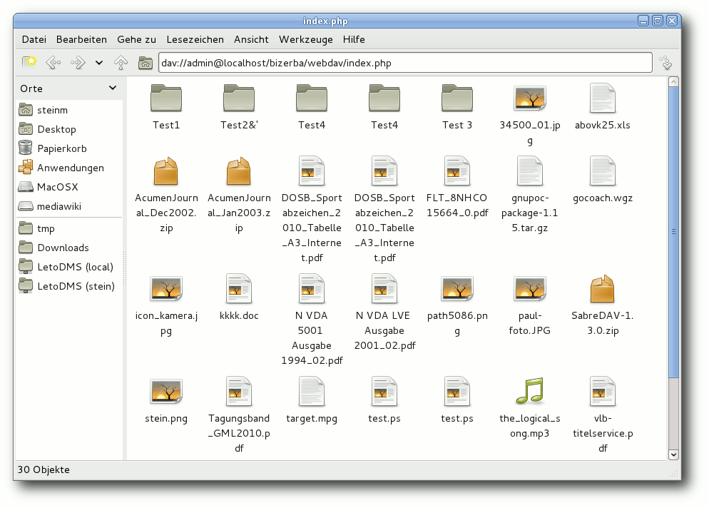

freiesMagazin August 2012
(ISSN 1867-7991)
Topthemen dieser Ausgabe
IPv6Am 6. Juni fand, von den allermeisten Anwendern unbemerkt, der IPv6 Launch Day statt. Auf diesen Tag hin sollten möglichst viele Internetprovider, Webseiten-Betreiber und Hersteller von Netzwerk-Hardware IPv6 unterstützen. Aber warum dieser Aktionismus? Wird hier versucht, das Sommerloch zu füllen? Natürlich ließe sich die Frage nach der Notwendigkeit von IPv6 auch hier wieder mit der Standard-Aussage beantworten: „Weil mit IPv4 die Adressen ausgehen.“ Die Antwort in diesem Beitrag soll für alle Anwender verständlich, daher auch etwas ausführlicher sein. (weiterlesen)
LanguageTool
Die freie Stil- und Grammatikprüfung LanguageTool ist in Version 1.8 verfügbar und erkennt neben Grammatik-, Zeichensetzungs- und Tippfehlern auch Rechtschreibfehler. Wie und wo LanguageTool eingesetzt werden kann, was das Tool kann und wie es funktioniert, wird im folgenden Artikel beschrieben. (weiterlesen)
Taskwarrior
Der Taskwarrior ist eine Aufgabenverwaltung für die Kommandozeile. Von einfachen To-do-Listen bis hin zum Management kleinerer Projekte wird alles durch diese Anwendung abgedeckt. (weiterlesen)
Zum Index
Inhalt
Linux allgemeinIPv6
Fedora 17
Der Juli im Kernelrückblick
Anleitungen
Perl-Tutorium – Teil 8
Software
LanguageTool – Freie Grammatikprüfung
Taskwarrior – What's next?
GnuCash
C.U.O.N., GTK3 und Broadway
Dokumentenmanagement mit LetoDMS – Einrichtung von WebDAV
Medusa
Community
Rezension: JavaScript: The Good Parts
Rezension: Erlang/OTP
Magazin
Editorial
Leserbriefe
Veranstaltungen
Vorschau
Konventionen
Impressum
Zum Index
Editorial
Vorschläge für Vortrag gesucht
Im Oktober dieses Jahres findet erstmals in Berlin die Ubucon [1] statt. Der „Call for Papers” [2] wurde soeben eröffnet. Da ein Schwerpunktthema die „Community“ sein soll, ist die Idee, dass auch freiesMagazin mit einem Vortrag vor Ort ist. Die Frage ist nur: Mit welchem Thema? Daher direkt die Frage an Sie, lieber Leser: Was würde Sie denn in einem Vortrag zu freiesMagazin interessieren? Allgemein das Prozedere im Hintergrund vom Autorenerstkontakt bis zur Veröffentlichung eines Artikels? Oder z. B. die Erstellung unserer Mobilausgabe im EPUB-Format? Oder etwas ganz anderes? Schreiben Sie einfach in die Kommentare [3], was Sie interessiert und wir versuchen, daraus einen Vortrag, eine Diskussionsrunde, einen Workshop oder etwas völlig anderes zu entwickeln. Und natürlich freuen wir uns auch über jeden Zuhörer, der zur Ubucon nach Berlin kommt, um dann zuzuhören.Erstellung der EPUB-Version
Immer mal wieder werden wir gefragt, mit welchem Programm wir eigentlich die EPUB-Version von freiesMagazin erstellen und ob es möglich ist, auch ältere Ausgaben zu konvertieren. Unsere gesammelten Erfahrungen mit Sigil [4], einem E-Book-Editor, werden wir daher in einer der folgenden Ausgaben vorstellen.freiesMagazin als Debian-Paket
Wie bereits in der vorigen Ausgabe berichtet, gibt es die Neuerscheinungen von freiesMagazin nicht nur per RSS-Feed, sondern auch als Debian-Paket, das von MarcusLS [5] jeden Monat als deb-Paket in seinem PPA (Personal Package Archive) [6] zur Verfügung gestellt wird. Ab sofort wird das deb-Paket nicht nur die PDF-Version, sondern auch die EPUB-Version enthalten. An dieser Stelle möchten wir darauf hinweisen, dass fremde Paketquellen Probleme bei Paketaktualisierungen bereiten können, vor allem, wenn sehr viel Software in ihnen vorhanden ist. Die Benutzung geschieht also auf eigene Gefahr. Daneben erfolgt das Angebot nicht von der freiesMagazin-Redaktion direkt, sondern ist ein reines Privatangebot. Wer es nutzen möchte, ist aber herzlich dazu eingeladen. Ihre freiesMagazin-Redaktion Links[1] http://ubucon.de/2012/
[2] http://ubucon.de/2012/cfp
[3] http://www.freiesmagazin.de/20120719-vorschlaege-fuer-freiesmagazin-vortrag-gesucht
[4] http://code.google.com/p/sigil/
[5] https://launchpad.net/~marcusls/
[6] https://launchpad.net/~marcusls/+related-software
Das Editorial kommentieren
Zum Index
IPv6
von Mathias Menzer Am 6. Juni fand, von den allermeisten Anwendern unbemerkt, der IPv6 Launch Day statt. Auf diesen Tag hin sollten möglichst viele Internetprovider, Webseiten-Betreiber und Hersteller von Netzwerk-Hardware IPv6 unterstützen. Aber warum dieser Aktionismus? Wird hier versucht, das Sommerloch zu füllen? Natürlich ließe sich die Frage nach der Notwendigkeit von IPv6 auch hier wieder mit der Standard-Aussage beantworten: „Weil mit IPv4 die Adressen ausgehen.“ Die Antwort in diesem Beitrag soll für alle Anwender verständlich, daher auch etwas ausführlicher sein.Netzwerke und Protokolle
Für die Betrachtung des Rahmens für IPv6 ist ein kurzer Exkurs in die Netzwerkprotokolle notwendig. Diese werden für die Kommunikation in Netzwerken verwendet, um sicherzustellen, dass sich alle Teilnehmer auch verstehen. Dabei befinden sich mehrere Protokollschichten übereinander, die jeweils aufeinander aufbauen und verschiedene Aspekte der Kommunikation abdecken. Auf unterster Ebene wird die Übermittlung von Informationen durch das Anlegen oder Wegnehmen einer elektrischen Spannung an einer Leitung bewerkstelligt. Ein Netzwerkkabel enthält mehrere dieser Leitungen, in Heim- und den meisten Firmennetzen werden darüber Daten mittels „Ethernet“ [1] übertragen. Die Spezifikationen von Ethernet bezeichnen nicht nur Hardware-Komponenten wie Stecker- und Kabeltypen, sondern auch die zu nutzenden Übertragungsmethoden, die zur Umwandlung von digitalen Informationen in elektrische Signale notwendig sind. Jedoch ist Ethernet nur für den Aufbau kleiner, örtlich begrenzter Netze geeignet. Bereits um mehr als zwei Geräte zu verbinden werden Hilfsmittel wie Hubs [2] oder Switches [3] notwendig, die die Verbindung zwischen den beteiligten Geräten herstellen. Um nun größere und vor allem regionale und globale Netze zu ermöglichen, wird ein weiteres Protokoll benötigt, das „Internet Protocol“ (IP) [4]. Das Internet Protocol ermöglicht die Aufteilung und Trennung von Netzen und Netzbereichen. Zum einen werden die IP-Adressen unabhängig von der Hardware-Adresse vergeben und können entsprechend aus einem zusammenhängenden Bereich gewählt werden. Zum anderen kennt IP „Routing“ [5], also das Weiterleiten von Netzwerkpaketen anhand von Routing-Tabellen in Richtung der Zieladresse. Diese beiden Eigenschaften ermöglichten erst die Entstehung des Internets [6]. IP ist ein paketorientiertes Protokoll. Das bedeutet, es schickt Netzwerkpakete einfach ab und kümmert sich nicht weiter um deren Verbleib, sobald sie zur Netzwerkschnittstelle hinaus sind. Es baut also keine Sitzungen (Englisch: Sessions) auf, innerhalb derer eine zuverlässige Datenübertragung geprüft und gewährleistet wird. Auch besitzt es keine einfache Schnittstelle für die gezielte Übertragung der Daten von Anwendungen. Dies bietet das „Transmission Control Protocol“ (TCP) [7] durch seine TCP-Ports. Wird ein Paket an einen solchen Port adressiert, so reicht TCP es automatisch an das zum Port gehörende Programm weiter. Als Beispiel sei hier Port 80 genannt, über den Webbrowser von einem Webserver die Herausgabe einer Web-Seite erfragen können. Die Sicherstellung, dass die gesendeten Daten auch wirklich am anderen Ende ankommen wird ebenfalls durch TCP umgesetzt, weshalb die Kombination dieser Protokolle als TCP/IP bekannt ist und das Rückgrat des Internet darstellt. Alle wichtigen Protokolle höherer Ebenen setzen für eine zuverlässige Datenübertragung auf den TCP/IP-Protokollstapel, darunter zum Beispiel die typischen Web-Protokolle HTTP [8] und HTTPS [9], sowie die für E-Mail notwendigen Protokolle SMTP [10] und POP [11].Versionssprung
Letztlich stellen die IP-Adressen die Basis für das Funktionieren und die Zuverlässigkeit von IP und aller darauf aufbauenden Protokolle dar. Ihre Größe von 32 Bit ergibt etwas weniger als 4,3 Milliarden Adressen, doch die Anzahl der am Internet teilnehmenden Geräte liegt schon längst darüber. Möglich macht dies eine Behelfslösung namens Network Address Translation (NAT) [12] zusammen mit einigen speziellen IP-Adress-Pools, die im Internet selbst nicht genutzt werden. So können Heim- und Unternehmensnetze intern diese privaten IP-Adressen [13] verwenden und lassen diese beim Zugriff auf das Internet in offizielle Adressen „übersetzen“. Das bedeutet, dass ein Router sich merkt, wenn ein Rechner aus seinem Netzwerk eine Verbindung zu einem Server im Internet öffnet und die Informationen dazu in einer Tabelle festhält um zwischen Rechner und Server vermitteln zu können. Aus Sicht des Servers greift dann der Router auf seine Dienste zu. Dieses Verfahren spart jede Menge Adressen ein, die sonst an jeden einzelnen Privat- oder Firmen-PC vergeben werden müssten, von internetfähigen Mobiltelefonen gar nicht zu reden. Ein kleiner Gewinn hierbei ist, dass Geräte hinter einem NAT-Router unsichtbar bleiben und damit eine gewisse Privatsphäre genießen. Dennoch stellt NAT letztlich eine Krücke dar, die auch Probleme verursacht. Eine der Forderungen an ein überarbeitetes Internetprotokoll ist also, dass der Adressraum viel größer sein muss. Die weite Verbreitung von vernetzten Geräten auch unter technisch wenig interessierten Menschen bringt auch den Wunsch nach einer einfacheren Netzwerkkonfiguration mit sich. Der IPv4-Nachfolger wurde ab 1995 nach diesen und weiteren Kriterien entwickelt und drei Jahre später als IPv6 mit dem RFC 2460 [14] veröffentlicht.Was ist neu?
Was beim Anblick einer IPv6-Adresse auffällt, ist ihre scheinbare Komplexität. Sie ist mit 128 Bit viermal so lang wie ihr IPv4-Pendant und ermöglicht einen kaum vorstellbaren Adressraum von 79 Quadrilliarden Adressen. Die acht Blöcke mit jeweils 4 hexadezimalen Ziffern werden durch Doppelpunkte getrennt und zusätzlich kommen noch Verkürzungsregeln zum Einsatz:- Die führenden Nullen eines Blocks können entfallen:
Entfernung führender Nullen 2001 : 0db8 : 0000 : 0000 : f054 : 00ff : 0000 : 02eb → 2001 : db8 : 0 : 0 : f054 : ff : 0 : 2eb
- Mehrere nur aus Nullen bestehende Blöcke können zusammengefasst
und durch zwei direkt aufeinander folgende Doppelpunkte markiert
werden.
Diese Zusammenfassung kann nur einmal pro Adresse angewendet werden:
Zusammenfassung von Blöcken 2001 : db8 : 0 : 0 : f054 : ff : 0 : 2eb → 2001 : db8 : : : 0 : f054 : ff : 0 : 2eb
Übergangsverfahren
Da der Umstieg von Version 4 auf Version 6 nicht von jetzt auf gleich geschehen kann, gibt es Mechanismen für die potentiell sehr lange Übergangszeit, in der beide Protokolle zum Einsatz kommen. Das Verfahren, das in nächster Zeit am meisten Verbreitung finden wird, ist Dual-Stack. Dies bedeutet nichts anderes, als dass für die Netzwerkschnittstelle beide IP-Protokolle implementiert werden und ein Gerät somit neben IPv4- auch IPv6-Adressen bekommt. Über welche Protokoll-Version eine Kommunikation dann tatsächlich abläuft, hängt von den Fähigkeiten der beteiligten Komponenten, also Client, Server und den Netzwerkgeräten dazwischen ab. Im Idealfall bekommt der Anwender davon nichts mit. Die IPv6-Unterstützung lässt auch 13 Jahre nach Veröffentlichung des Standards zu wünschen übrig. Ärgerlich ist für den Anwender zu Hause vor allem, dass derzeit keiner der großen Internetzugangsprovider IPv6 anbietet. Somit sind auch hier wieder Behelfslösungen notwendig, wo IPv6 erwünscht oder benötigt wird. Insbesondere Tunnelverfahren sind hier gängig, zumal diese teilweise auch von den Herstellern einiger Breitband-Router unterstützt werden. Recht simpel auf Anwenderseite ist 6to4 [17], bei dem IPv6 in v4-Pakete gepackt und dann an ein 6to4-Relay gesendet werden. Dieses fungiert dann quasi als Zugangspunkt zum IPv6-Internet. Die IPv4-Adresse des Rechners wird bei diesem Verfahren in die IPv6-Adresse codiert, indem die Bestandteile in hexadezimale Ziffern umgewandelt und hinter ein "2002:Präfix gehängt werden. Einen etwas anderen Weg geht 6in4, das gerne von Tunnelbrokern [18] genutzt wird. Hier wird über den Tunnelbroker ein eigenes IPv6-Netzwerk bereitgestellt. Auch hier ist der Tunnelbroker beziehungsweise ein angeschlossener Zugangspunkt (POP = Point of Presence) die Pforte zur IPv6-Welt. Als Beispiel sei hier SixXS [19] genannt, das unter anderem von aktuellen Routern aus dem Hause AVM unterstützt wird. Diese können dann auch den in ihrem Netzwerk befindlichen Rechnern IPv6-Adressen zuweisen und so an dieses Protokoll anbinden. Einen Endpunkt direkt am Client bietet auch Teredo [20], das von Microsoft entwickelt und seit Windows XP verfügbar ist. Eine Umsetzung des Protokolls für Linux und BSD existiert unter dem Namen Miredo. Auch hier wird ein Miredo-Server zur Anbindung verwendet, im Gegensatz zu den bisher vorgestellten Tunnel-Mechanismen wird hier jedoch lediglich das Gerät bedacht, auf welchem der Miredo-Dienst läuft. Alle Tunnel bergen ein großes Problem: Was mit ihrer Hilfe transportiert wird, kann in der Regel durch Firewalls und Proxies nicht kontrolliert werden. Also stellen sie entweder ein potentielles Sicherheitsrisiko für größere Netzwerke dar oder die Verwendung dieser Tunnel wird von den Netzwerk-Administratoren gleich ganz unterbunden. Eine letzte Lösung für derartig eingeschränkte Nutzer stellen dann noch Proxies [21] dar, die Web-Dienste aus dem IPv6-Internet auf einem per IPv4 erreichbaren Server darstellen. Ein Verfahren, mit dem man unter IPv4 bereits viele Erfahrungen sammeln konnte, ist NAT. So wurde auch eine Variante spezifiziert, die die Umsetzung von IPv4- in IPv6-Pakete beschreibt. NAT64 [22] erfordert keinen Tunnel, sondern arbeitet auf beiden Seiten mit den jeweiligen Protokollen. Im Endeffekt werden IPv4-Adressen hexadezimal kodiert und dann an ein für dieses Verfahren vorgesehenes IPv6-Präfix angefügt (Bsp: 203.0.113.1 → cb00:7101 → 64:ff9b::cb00:7101). Das NAT-Gateway vermittelt dann zwischen beiden Welten, wobei dies jedoch nur für die mit IPv6 angebundenen Geräte transparent ist. Die IPv4-basierten Rechner sehen als Kommunikationspartner nur das NAT-Gateway und wissen von den dahinter liegenden IPv6-Host nichts. Insofern eignet sich dies nur, um reinen IPv6-Netzen Zugriff auf die Reste des IPv4-Internets zu gewähren, ist also eher Zukunftsmusik.Probleme
Getreu dem Motto „es muss nicht besser werden, weil es anders wird“ (frei nach Georg Christoph Lichtenberg [23]), bringen die Änderungen des neuen Protokolls auch ein paar Probleme mit sich. Von Datenschützern wird beispielsweise immer wieder darauf hingewiesen, dass sich mit den neuen Adressen die Anwender leicht verfolgen lassen. Dass jedes Gerät eine eindeutige Adresse erhält und diese auch zeitlebens behalten kann, ist eindeutig im Design von IPv6 vorgesehen. Somit entfallen drei Punkte, die bislang eher als Nebenprodukt von Behelfslösungen die Privatsphäre des Nutzers ein wenig geschützt hatten:- Die dynamische Adresse im eigenen Netzwerk: Sie weicht dem durch die permanente Hardware-Adresse bestimmten Interface Identifier.
- Die dynamisch vergebene Adresse des DSL-Routers: Der Internet-Provider ist nicht weiter in der Not Adressen zu sparen. Nutzern einen permanenten Adress-Bereich für den Internet-Anschluss zuzuweisen, könnte den Verwaltungsaufwand reduzieren.
- NAT am DSL-Router: Das Präfix des Routers zusammen mit dem Interface Identifier ergeben eine eindeutige Adresse für jedes Gerät.
Chancen
Gerne wird dabei vergessen, dass IPv6 auch erhebliche Vorteile bietet. Um obiges Zitat zu vervollständigen: „Aber es muss anders werden, wenn es besser werden soll.“ So bringt IPv6, wie bereits erwähnt, Mechanismen mit, die Rechner automatisch für den Netzzugang konfigurieren. Ad-Hoc-Netzwerke, um mal eben schnell ein paar Bilder zu übertragen, sind damit in greifbarer Nähe. Entfällt so doch die Notwendigkeit, manuell die Netzwerkeinstellungen aller beteiligten Geräte oder einen DHCP-Dienst auf einem davon einzurichten. Einer der größten Nebeneffekte des riesigen Adressraumes ist die Schwierigkeit, einen Netzwerk-Scan durchzuführen. Firewall-Betreuer kennen die entsprechenden Warnmeldungen und Einträge in den Logfiles, wenn Verbindungsversuche auf bestimmten, berüchtigten Ports ganze Bereiche der von der Firewall verwalteten IP-Adressen betreffen. In der Regel kündigt dies weitergehende, aber gezieltere Versuche an, in potentiell verwundbare Systeme einzudringen. Befanden sich bei IPv4 vielleicht „nur“ einige tausend Adressen im Besitz einer Firma, so können es nun leicht mehrere Billionen oder Billiarden sein. Eine solche Anzahl an Adressen abzuscannen ist schier unmöglich, zumindest wird es die Ressourcen eines Angreifers einige Zeit lang binden. Angriffe auf Netzwerke von außerhalb wird es voraussichtlich weiterhin geben, jedoch ist die Hürde hier höher.Zum Schluss
Was es mit IPv6 auf sich hat, lässt sich nicht in einem Satz erklären. Das weiterentwickelte Internetprotokoll krempelt zwar an den Grundsteinen des Internets einiges um, doch von Auswirkungen wird der durchschnittliche Anwender weitgehend verschont bleiben. Vorerst wird IPv6 nur in kleinen Schritten die Welt erobern können und bis IPv4 seine Bedeutung verliert, werden Betriebssysteme, Anwendungen und Netzwerkgeräte das neuere Protokoll ausreichend gut unterstützen. Links[1] https://de.wikipedia.org/wiki/Ethernet
[2] https://de.wikipedia.org/wiki/Hub_(Netzwerk)
[3] https://de.wikipedia.org/wiki/Switch_(Netzwerk)
[4] https://de.wikipedia.org/wiki/Internet_Protocol
[5] https://de.wikipedia.org/wiki/Routing
[6] https://de.wikipedia.org/wiki/Internet
[7] https://de.wikipedia.org/wiki/Transmission_Control_Protocol
[8] http://de.wikipedia.org/wiki/Hypertext_Transfer_Protocol
[9] http://de.wikipedia.org/wiki/Hypertext_Transfer_Protocol_Secure
[10] http://de.wikipedia.org/wiki/Simple_Mail_Transfer_Protocol
[11] http://de.wikipedia.org/wiki/Post_Office_Protocol
[12] https://de.wikipedia.org/wiki/Network_Address_Translation
[13] https://de.wikipedia.org/wiki/Private_IP-Adresse
[14] https://tools.ietf.org/html/rfc2460
[15] http://de.wikipedia.org/wiki/Domain Name System
[16] http://de.wikipedia.org/wiki/DHCP
[17] https://de.wikipedia.org/wiki/6to4
[18] https://de.wikipedia.org/wiki/Tunnelbroker
[19] https://www.sixxs.net
[20] https://de.wikipedia.org/wiki/Teredo
[21] https://de.wikipedia.org/wiki/Proxy_(Rechnernetz)
[22] https://de.wikipedia.org/wiki/NAT64
[23] https://de.wikipedia.org/wiki/Georg_Christoph_Lichtenberg
[24] https://tools.ietf.org/html/rfc4941
[25] http://www.spiegel.de/netzwelt/web/neues-internet-protokoll-provider-versprechen-datenschutz-bei-ipv6-a-760274.html
[26] https://tools.ietf.org/html/draft-mrw-behave-nat66-02
[27] https://de.wikipedia.org/wiki/Dynamic_Host_Configuration_Protocol#DHCPv6
| Autoreninformation |
| Mathias Menzer (Webseite) arbeitet als Netzwerk-Administrator und bereitet sich auf den Umgang mit dem neuen Protokoll vor. |
Diesen Artikel kommentieren
Zum Index
Fedora 17
von Hans-Joachim Baader Das neu erschienene Fedora 17 will den Benutzern, wie jedes halbe Jahr, die neueste freie Software und neueste Technologien bringen. Dieser Artikel zeigt, was es dabei zu entdecken gibt. Redaktioneller Hinweis: Der Artikel „Fedora 17“ erschien erstmals bei Pro-Linux [1].Überblick
Ein klein wenig später als ursprünglich geplant erschien Fedora 17 als Nachfolger des ein halbes Jahr alten Fedora 16 (siehe freiesMagazin [2]). Der Schwerpunkt dieser Version ist offenbar die Cloud. Ansonsten enthält die Distribution zwar viele Updates, aber nur eine tiefgreifende Änderung. Dabei handelt es sich um die Zusammenlegung der systemeigenen Dateien nach /usr. Die Unterverzeichnisse /bin, /lib und /sbin sind nur noch symbolische Links auf die gleichnamigen Verzeichnisse in /usr, um die Kompatibilität zu wahren. Diese Änderung war nicht frei von Kontroversen, ändert für normale Benutzer jedoch nichts. Allerdings macht sie ein Online-Update von Fedora 16 unmöglich – aber empfohlen wurden Online-Updates sowieso noch nie.Die Begrüßung nach der Installation.
Einige der wichtigsten weiteren Änderungen sollen hier gleich genannt werden. Wenn man einen Kernel für die Installation direkt bootet, beispielsweise übers Netz, muss man diverse Parameter jetzt anders spezifizieren. Die Prüfung der Passwortqualität wurde in eine zentrale Bibliothek libpwquality ausgelagert, die verschiedene Konfigurationsoptionen anbietet. In SELinux gibt es jetzt eine Einstellung, die den potentiell gefährlichen Systemaufruf ptrace global abschaltet. Auf Entwicklerrechnern ist diese Option nicht sinnvoll, da sie von Debuggern benötigt wird, auf Rechnern normaler Benutzer dagegen schon. Eine weitere Maßnahme zur Verbesserung der Sicherheit stellt die Möglichkeit dar, dass Dienste, die von Systemd gesteuert werden, ihr privates /tmp-Verzeichnis erhalten. Neu ist das Werkzeug sandbox, mit dem man ein Programm, beispielsweise einen Server, in einem eigenen sicheren Container ausführen kann. Das Werkzeug ermittelt automatisch die benötigten Parameter für libvirt und startet das Programm in einem SELinux-Kontext, der jede Interaktion mit dem System oder anderen Containern verhindert, aber es dem Programm dennoch erlaubt, die Systemdaten zu nutzen. Dazu muss das Paket libvirt-sandbox installiert werden. Das Dateisystem ext4 wurde erweitert, sodass Dateisysteme jetzt bis zu 100 TB groß sein können, statt bisher 16 TB. Verschlüsselte Dateisysteme können ihre LUKS-Header auf separate Geräte legen und gemeinsame, nicht überlappende Segmente auf einem Gerät nutzen. Qemu wurde auf Version 1.0 aktualisiert und erhielt mehrere neue Funktionen. Es unterstützt jetzt die Live-Migration, in KVM-Gästen kann man normale Profiling-Werkzeuge verwenden, und Image-Streaming wurde implementiert. Damit können neue virtuelle Maschinen auf Basis vorhandener Images sehr schnell starten, sie erhalten dann zur Laufzeit nach und nach ihre benötigten Daten. Außerdem wurde ein virtio-Gerät für SCSI-Speichergeräte eingeführt. Dieses funktioniert in einer virtuellen Maschine wie ein SCSI-Controller (Host Bus Adapter) und soll wohl neue, noch schnellere Blockgeräte ermöglichen. Wenn mehrere Arbeitsplätze an einen einzelnen Rechner angeschlossen werden, war früher eine komplexe manuelle Konfiguration nötig. In Fedora 17 soll sie automatisch erfolgen [3]. Dafür ist etwas zusätzliche Hardware in Form einer Docking Station nötig, die Anschluss von Monitor, Tastatur, Maus und Audiogeräten ermöglicht.
Vorbemerkungen
Dieser Artikel wird sich auf die Desktopumgebungen GNOME und KDE beschränken. Aus praktischen Gründen sind auch andere Einschränkungen nötig. So wurden natürlich zahlreiche zur Distribution gehörende Softwarepakete geändert oder ersetzt. Mit wenigen Ausnahmen kann auf diese Änderungen nicht eingegangen werden; man darf annehmen, dass die meisten Pakete unter allen aktuellen Distributionen nahezu gleich sind und überall gleich gut funktionieren. Wie immer sei angemerkt, dass es sich hier nicht um einen Test der Hardwarekompatibilität handelt. Es ist bekannt, dass Linux mehr Hardware unterstützt als jedes andere Betriebssystem, und das überwiegend bereits im Standard-Lieferumfang. Ein Test spezifischer Hardware wäre zu viel Aufwand für wenig Nutzen. Falls man auf Probleme mit der Hardware stößt, stehen die Webseiten von Fedora zur Lösung bereit. Da eine Erprobung auf realer Hardware nicht das Ziel des Artikels ist, werden für den Artikel zwei identische virtuelle Maschinen, 64 Bit, unter KVM mit jeweils 1 GB RAM verwendet. Außerdem wurde ein Netbook mit 32-Bit-CPU, aber funktionierender Grafikbeschleunigung, von Fedora 16 auf 17 aktualisiert.Installation
Fedora kann von DVD, einem Satz von CDs, Live-CDs oder minimalen Bootmedien installiert werden. Natürlich kann man aus einem ISO-Image auch ein USB-Medium für die Installation erstellen. Die Live-CDs, in den Varianten GNOME und KDE, sind aufgrund ihres geringen Umfangs eher eine Notlösung für die Installation, denn es fehlen dann unter anderem LibreOffice und Übersetzungen. Zwar erfolgt die Installation binnen Minuten, da hierbei offenbar mehr oder weniger nur ein Abbild der CD auf die Platte geschrieben wird, aber für normale, vollständige Installationen sind die DVD oder das minimale Image vorzuziehen, bei dem die eigentliche Distribution über das Netz installiert wird. Die Installation von Fedora erfordert mindestens 786 MB RAM, wie schon in Version 15 (siehe freiesMagazin 07/2011 [4]). Für den Betrieb werden mehr als 1 GB empfohlen, was aber allenfalls für ziemlich alte Rechner zu einem Problem wird.
Sprachauswahl auf der Boot-DVD.
Die grafische Installation ist gegenüber Fedora 16 nahezu unverändert. Die Partitionierung bietet wie immer zahlreiche Optionen. Von der in Fedora 16 eingeführten Verwendung der GPT anstelle von MSDOS-Partitionstabellen ist allerdings nichts mehr zu sehen. Die Anmerkungen zur Veröffentlichung erwähnen die GPT überhaupt nicht mehr. Was geblieben ist, ist das Anlegen einer 500 MB großen /boot-Partition. Ich habe noch nie mehr als 200 MB benötigt und halte die 500 MB daher für zu groß, besonders bei kleineren Festplatten (man denke an SSDs). Zudem ist sie in den meisten Fällen unnötig, da GRUB2 mittlerweile auch direkt von LVM booten kann. Der Verzicht auf GPT ist verschmerzbar, da Linux mit LVM eine wesentlich flexiblere und leistungsfähigere Methode der Partitionierung besitzt. Neben normalen Partitionen sind auch Verschlüsselung und RAID weiterhin verfügbar. Das Dateisystem Btrfs steht in dieser Version nicht als Option bei der Installation zur Verfügung, ein Rückschritt gegenüber Version 16, der leider nicht begründet wird. In Fedora 18 soll Btrfs wieder verfügbar sein. Bis dahin kann man zwar Btrfs-Partitionen anlegen und nutzen, aber erst nach der Installation. Oder man müsste das Dateisystem vor der Installation anderweitig anlegen, eventuell von einer Live- oder Rettungs-CD aus.
Optionen der Partitionierung.
Ausstattung
Dass nahezu alle Softwarepakete, bei denen das möglich war, aktualisiert wurden, versteht sich von selbst. Als Kernel kommt nun eine erweiterte Version von Linux 3.3.4 zum Einsatz, diese wurde jedoch schon mit einem der ersten Updates durch Linux 3.4.0 ersetzt. Als Desktop-Systeme stehen unter anderem KDE SC 4.8 und GNOME 3.4 zur Verfügung. Auch die Desktopumgebung Sugar ist enthalten, sie liegt jetzt in Version 0.96 vor. Der Standard-Browser unter GNOME ist Firefox 13. Unter KDE steht neben dem etatmäßigen Konqueror ebenfalls Firefox zur Verfügung. Auf 64-Bit-Systemen liegt Firefox auch als 64-Bit-Version vor. Die Standard-Office-Suite auf beiden Desktops ist LibreOffice 3.5. Fedora aktualisiert KDE, GNOME, Firefox, LibreOffice und andere häufig auf die neueste Unterversion. Die Anmerkungen zur Veröffentlichung machen auf einige weitere neue oder aktualisierte Programme aufmerksam. Neu sind cherrytree zum Verwalten von Notizen, rachota als portable Zeiterfassung, Timeline zum Anzeigen von Ereignissen auf einer Zeitleiste, der schlanke Musikplayer epris, epstool zum Arbeiten mit Embedded PostScript, der Streaming-Client idjc und vpmk, das Virtual MIDI Piano Keyboard. Zu den Updates zählen Evolution 3.3.5, Lemon POS 0.9.4, Scribus 1.4.0, VYM 2.0.6, Blender 2.6.1, Calibre 0.8.39 und GIMP 2.8.0. Die meisten dieser Programme sind nicht installiert, sondern stehen in den Online-Repositorys bereit. Neu ist auch die Unterstützung für Farbprofile beim Drucken mit colord.Firefox 13 unter GNOME.
Der X-Server unterstützt Multitouch und sanften Bildlauf. Einige alte Grafiktreiber wurden entfernt, namentlich die für Intel i810 und i815, Matrox MGA G200, G400, G450 und G550, ATI Rage 128, S3 Savage 3D und Savage 4, SiS 300, 540, 630 und 730, 3dfx Voodoo 3, Voodoo 4 und Voodoo 5 sowie VIA Unichrome und Unichrome Pro. Alle werden mit Software-Rendering durch denn llvmpipe-Treiber unterstützt, womit sie sogar OpenGL2-fähig werden. Während die mögliche Funktionalität dadurch zugenommen hat, dürfte die Geschwindigkeit jedoch gesunken sein. Wie groß der Geschwindigkeitsverlust ist, ist schwer zu sagen. Im Falle eines Cirrus-Chips kann man feststellen, dass viele Fensteroperationen spürbar langsam sind. Im Ausweichmodus von GNOME hingegen, der keine 3-D-Funktionen einsetzt, läuft alles verzögerungsfrei. Die Datenbank-Server MySQL, PostgreSQL und SQLite wurden aktualisiert, wobei bei SQLite 3.7.9 viele Neuerungen hinzukamen, MySQL 5.5.20 und PostgreSQL 9.1.2 aber nur Korrekturen enthalten. Zusammen mit Qemu wurden auch libvirt und virt-manager erneuert, außerdem werden erstmals OpenNebula und Open vSwitch mitgeliefert. OpenStack ist nun in der neuesten Version »Essex« dabei.
LibreOffice 3.5 unter KDE.
Für Entwickler bietet Fedora 17 unter anderem vollständige Entwicklungsumgebungen für Ada, D und Haskell. Die Programmiersprache Opa wurde hinzugefügt. GCC 4.7, GDB 7.4.50.20120120, OpenJDK 7 und viele weitere Pakete wurden aktualisiert. Zudem packten die Entwickler JBoss 7 AS in die Distribution, allerdings noch nicht im vollen Umfang, sondern vorerst nur das „Web-Profil“. Fedora 17 startet etwa genauso schnell wie sein Vorgänger. Wie immer ist SELinux eingebunden und aktiviert. Als normaler Benutzer merkt man überhaupt nichts davon, solange die Konfiguration korrekt ist. In Fedora 17 wie auch in der Vorversion trat kein sichtbares Problem im Zusammenhang mit SELinux auf. Für den Fall, dass ein Problem auftritt, sei es nach der Installation von zusätzlicher Software oder anderen Änderungen, steht ein Diagnosewerkzeug zur Verfügung. GNOME 3 benötigt in Fedora 17 direkt nach dem Start mit einem geöffneten Terminal-Fenster etwa 320 MB RAM, KDE etwa 450 MB. Bei der Geschwindigkeit lässt sich kein nennenswerter Unterschied zwischen den Desktops feststellen, sofern genug RAM vorhanden ist. Die Angaben zum Speicherverbrauch sind nur als Anhaltswerte zu sehen, die sich je nach Hardware und Messzeitpunkt erheblich unterscheiden können.
GNOME
GNOME 3.4 ist der Standard-Desktop von Fedora 17, wenn man nicht ausdrücklich KDE, Xfce, LXDE oder anderes auswählt. Gegenüber GNOME 3.2 wurden zahlreiche vorhandene Anwendungen überarbeitet, so dass sie sich konsistenter in GNOME 3 integrieren. Neu sind die sogenannten Anwendungsmenüs, die allerdings nichts mit den „globalen Menüs“ von Ubuntu zu tun haben, obwohl sie in der globalen Menüleiste erscheinen. Diese Menüs, die mit dem Namen der Anwendung gekennzeichnet sind, bieten neuen Platz für Optionen, welche die gesamte Anwendung betreffen (im Gegensatz zu einzelnen Fenstern), wie zum Beispiel Einstellungen oder Dokumentation. Zur Zeit sind erst wenige Anwendungen, z. B. die Dokumentenverwaltung, mit diesem Menü ausgestattet. Bei den meisten anderen Anwendungen enthält das Menü nur Beenden als einzigen Menüpunkt. Die Suche innerhalb der Aktivitäten stellt bereits einen schnellen Weg dar, um auf Anwendungen, Kontakte und Systemeinstellungen zuzugreifen. Dies ist jetzt auch mit Dokumenten möglich. Die neue Dokumentensuchfunktion wird von der Dokumentenverwaltung direkt zur Verfügung gestellt. Das bedeutet, dass sowohl lokale als auch online gespeicherte Dokumente gesucht werden können.Dokumentenverwaltung mit Anwendungsmenü.
Die Buttons Wikipedia und Google öffnen lediglich die jeweilige Seite mit dem aktuellen Suchbegriff im Webbrowser. Somit bietet die GNOME-Shell keine Möglichkeit, eine Suche auf bestimmte Kategorien einzuschränken. Das Konzept der Linsen in Unity von Ubuntu ist im Vergleich wesentlich leistungsfähiger und benutzerfreundlicher. Die GNOME-Shell kann nun dank Software-Rendering auf jeder Hardware laufen, der Fallback-Modus steht optional aber noch zur Verfügung. In der Shell wurden ansonsten keine bedeutenden Änderungen vorgenommen. Offenbar sind die Entwickler und Benutzer der GNOME-Shell mit der grundsätzlichen Implementierung so zufrieden, dass sie keine Notwendigkeit für größere Änderungen sahen. Daher ist es an dieser Stelle nicht nötig, nochmals auf die GNOME-Shell einzugehen. Selbstverständlich erfordert sie etwas Gewöhnung, ist aber ziemlich intuitiv und auch in der Praxis effizient nutzbar, wenn man die eher umständlichen Maus-Aktionen durch Tastenkürzel ergänzt. Die GNOME-Shell ist in begrenztem Umfang erweiterbar, an Konfigurationsmöglichkeiten mangelt es aber auch weiterhin. Abhilfe schaffen das Programm gnome-tweak-tool und seine grafische Oberfläche gTweakUI, die nachinstalliert werden können. Zahlreiche Shell-Erweiterungen werden jetzt auch offiziell auf extensions.gnome.org [5] angeboten. Unter Fedora sind einige (etwa 40) Erweiterungen über die Paketverwaltung verfügbar. Die Installation allein genügt aber noch nicht, man muss sie zusätzlich auch aktivieren, was im gTweakUI mit einem einfachen Schalter möglich ist. Ein weiteres Problem trat mit der GNOME-Shell auf. Sie wacht ziemlich häufig auf, um Daten von einem Socket zu lesen, obwohl keine vorhanden sind. Die dadurch benötigten 0,3 % CPU (auf manchen Systemen vielleicht noch weniger) fallen zwar kaum auf, dürften dem Energiesparen aber deutlich abträglich sein. In virtuellen Maschinen kann dieser Effekt sogar um ein Vielfaches höher ausfallen. Hier muss GNOME offensichtlich nacharbeiten, sonst ist Fedora 17 als virtuelle Maschine kaum brauchbar.
GNOME-Shell mit Starter und Suche.
KDE
KDE ist in Version 4.8 enthalten. Die Plasma-Workspaces der neuen Version erhielten die Möglichkeit, das Umschalten von Fenstern auf verschiedene Arten zu visualisieren. Sechs verschiedene Ansichten der geöffneten Fenster, zwischen denen man wechseln kann, stehen zur Verfügung. Die Einstellungen zur Energieverwaltung wurden neu entworfen und sind nun einfacher. Sie passen sich den Aktivitäten des Benutzers an, sodass z. B. während des Abspielens von Videos nie der Bildschirm ausgeschaltet wird. Das neue KSecretService stellt einen allgemeinen Passwortspeicher zur Verfügung, der bestimmten Diensten bereitgestellt werden und mit manchen Diensten synchronisiert werden kann. Qt Quick wird nun verstärkt genutzt. Die neuen Plasma-Komponenten stellen eine standardisierte API-Implementation von Widgets mit dem nativen Plasma-Aussehen bereit. Einige Funktionen wurden mit QtQuick neu geschrieben, darunter die Fensterumschaltung in KWin und die Benachrichtigung beim Anschluss von Geräten. Das Plasmoid „Icon Tasks“ stellt eine Alternative zur Taskleiste dar. Der Dateimanager Dolphin wurde schneller, und der Bildbetrachter Gwenview erhielt Verbesserungen der Bedienung und schönere Bildübergänge. Das Programm zum Anzeigen von Dokumenten, Okular, erhielt erweiterte Möglichkeiten zur Textauswahl. Der E-Mail-Client KMail wurde schneller und stabiler, und der Texteditor Kate kann nun unter anderem die Änderungen anzeigen. Wie schon in Fedora 16 sind über den normalen Umfang von KDE SC hinaus noch die Projektverwaltung Planner, das Layoutprogramm Scribus, der Photo Layouts Editor und, aus unerfindlichem Grund, eine Reihe von GNOME-Programmen, von Evolution über Brasero bis Empathy installiert. Das führt dazu, dass für eine Reihe von Aufgaben mindestens zwei Programme im Startmenü auftauchen, eines von GNOME und eines von KDE. Zudem präsentiert sich KDE nach der Installation komplett in Englisch, obwohl bei der Installation bereits Deutsch als Sprache ausgewählt wurde. Obwohl von der DVD installiert wurde, die zweifellos genug Platz für alle Übersetzungen bietet, wurde das deutsche Sprachpaket für KDE schlicht nicht mitinstalliert. Nach dem Hinzufügen des Sprachpakets war dieses Problem behoben. LibreOffice litt unter dem gleichen Problem.KDE-Desktop von Fedora 17.
Multimedia im Browser und auf dem Desktop
Wegen der Softwarepatente in den USA kann Fedora, ebenso wie die meisten anderen Distributionen, nur wenige Medienformate abspielen, da es viele benötigte Codecs nicht mitliefern kann. Wenn man versucht, eine MP3- oder Videodatei abzuspielen, dann bieten die gängigen Player aber die Option an, über die Paketverwaltung nach passenden Plugins zu suchen. Damit die Suche in der Paketverwaltung Aussicht auf Erfolg hat, muss man vorher die zusätzlichen Repositorien von RPM Fusion eintragen. Das muss man wissen oder durch Suchen herausfinden. Die Repositorien kann man eintragen, indem man die Webseite von RPM Fusion [6] besucht. Von dieser kann man Pakete installieren, die die Repositorien hinzufügen. Dies gilt für GNOME wie für KDE. Nach dieser Vorbereitung sollten die Player unter GNOME und KDE in der Lage sein, die benötigten Plugins selbsttätig zu installieren. Merkwürdigerweise hat Totem aber ein Problem, wenn man ausgerechnet mit der Suche nach einem MP3-Plugin anfängt und noch keine Codecs installiert sind – diese Suche schlägt fehl. Bei Videoformaten funktioniert es aber. Am schnellsten und einfachsten ist allerdings eine manuelle Installation der GStreamer-Plugins, insbesondere gstreamer-ugly und gstreamer-ffmpeg. Denn wenn man die Plugins von Totem installieren lässt, treten eine Reihe von Merkwürdigkeiten auf:- Die Dialogbox, die die gefundenen Pakete anzeigt, zeigt entweder gar nichts oder hat zu wenig Platz für die Namen vorgesehen.
- Nach der Installation muss Totem neu gestartet werden, sonst sieht er die Plugins nicht.
- Das Spiel mit Suchen und Installieren muss ggf. mehrmals wiederholt werden, denn das Programm scheint unfähig zu sein, alle benötigten Codecs auf einmal zu ermitteln.
- Zur Installation ist die Eingabe des eigenen Passworts nötig. Trotz korrekter Eingabe schreibt die Dialogbox jedoch „Entschuldigung, das hat nicht geklappt“, nur um dann fortzusetzen und die Pakete korrekt zu installieren.
Codec-Installation in Totem.
Die Flash-Situation in den Browsern bleibt mittelmäßig. Ohne den Adobe Flash Player geht nicht allzu viel. Gnash wurde auf Version 0.8.10 aktualisiert, kann aber viele Flash-Videos im Web nicht abspielen. Die freie Alternative Lightspark ist in Version 0.5.7 in den Repositorys von RPM Fusion enthalten. Sie verhält sich fast genauso wie Gnash. Bei der Installation des Adobe Flash Players kann man ähnlich vorgehen wie bei RPM Fusion. Zunächst lädt man von Adobe eine RPM-Datei herunter, die das Repository anlegt. Dann kann man über die Paketverwaltung das eigentliche Plugin installieren. Die Alternative zu Flash, das WebM-Format, sollte in Firefox seit Version 4 kaum Probleme bereiten.
Paketverwaltung und Updates
Wenig hat sich bei der Paketverwaltung getan. Installation bzw. Deinstallation und das Aktualisieren von Paketen sind weiterhin separate Anwendungen. Sie funktionieren normalerweise reibungslos und die Updates, wenn sie auch zahlreich sind, sind dank Delta-RPMs oft erstaunlich klein und schnell installiert. Die Paketverwaltung baut unter GNOME und KDE grundsätzlich auf PackageKit auf. Die Programme – gpk-application 3.4.2 bzw. apper 0.7.2 – sind komfortabel genug. Etwas Vergleichbares wie das Software Center von Ubuntu bietet Fedora jedoch nicht. Etwas merkwürdig ist, dass man beim ersten Update gefragt wird, ob man der Paketquelle vertraut. Eigentlich sollten die Schlüssel der Standard-Repositorys bereits vorinstalliert sein und Fedora sollte seinen eigenen Quellen automatisch vertrauen.Software-Aktualisierung unter GNOME.
Fazit
Fedora 17 hat mit Verbesserungen bei Multitouch, Farbverwaltung, Mehrplatzsystemen, der Sandbox und der Verschiebung der Systemdaten nach /usr wieder eine Menge Neues zu bieten. Die Distribution ist überwiegend sehr solide und wird gut mit Updates unterstützt. Zwar sind auch in dieser Version einige Merkwürdigkeiten zu verzeichnen, wie das Fehlen von Btrfs als Installationsoption und die Installation von GNOME-Paketen, wenn man KDE ausgewählt hat. Schwere Probleme sind aber eine Seltenheit, für die meisten Probleme gibt es einfache Workarounds. GNOME mit der GNOME-Shell ist nur zu empfehlen, wenn man eine gut unterstützte Grafikkarte hat, sonst wird die Oberfläche einfach zu langsam. Fedora bringt reichliche und häufige Updates und ist damit immer aktuell. Doch genau hier liegt auch die größte Schwäche der Distribution: Die Basis ändert sich ständig und es gibt keine Version mit langfristigem Support. Mindestens einmal im Jahr ist das Update auf die neueste Version Pflicht. Während das für fortgeschrittene Anwender eine einfache Tätigkeit darstellt, die sie leicht beherrschen, ist es normalen Anwendern einfach nicht zumutbar. Andere Distributionen, insbesondere Ubuntu oder Debian, bieten nicht nur wesentlich längeren Support, sondern ermöglichen auch das Update ohne Unterbrechung des Betriebs. Man könnte nun argumentieren, dass normale Benutzer statt Fedora Red Hat Enterprise Linux oder eine davon abgeleitete Distribution nutzen sollten, die ja weitgehend zu Fedora kompatibel sind. Dagegen spricht nichts, ganz im Gegenteil, aber diese Distributionen sind eben nicht exakt Fedora. Für mich bleibt es dabei, dass Fedora in erster Linie für erfahrene Benutzer geeignet ist, die immer die neueste Software wollen und auch kein Problem mit den Updates haben. Links[1] http://www.pro-linux.de/artikel/2/1573/fedora-17.html
[2] http://www.freiesmagazin.de/freiesMagazin-2012-01
[3] http://0pointer.de/blog/projects/multi-seat.html
[4] http://www.freiesmagazin.de/freiesMagazin-2011-07
[5] https://extensions.gnome.org/
[6] http://rpmfusion.org/
| Autoreninformation |
| Hans-Joachim Baader (Webseite) befasst sich seit 1993 mit Linux und ist einer der Betreiber von Pro-Linux.de. |
Diesen Artikel kommentieren
Zum Index
Der Juli im Kernelrückblick
von Mathias Menzer Basis aller Distributionen ist der Linux-Kernel, der fortwährend weiterentwickelt wird. Welche Geräte in einem halben Jahr unterstützt werden und welche Funktionen neu hinzukommen, erfährt man, wenn man den aktuellen Entwickler-Kernel im Auge behält.Linux 3.5 Entwicklung
Die Entwicklung von Linux 3.5 ging im Juli fröhlich weiter. 3.5-rc5 [1] konnte fast nur Korrekturen und dazu neue Fehlererkennungsroutinen beim Universal Disk Format [2] vorweisen. Der darauf folgende -rc6 [3] kam mit Ergänzungen der Dokumentation zum Device Mapper daher und weiterhin Fehlerkorrekturen, diesmal zumeist im ARM-Bereich. Die siebte Entwicklerversion fiel etwas größer aus [4], was unter anderem an der Rücknahme von Änderungen in der Speicherverwaltung liegt. Hier wurden einige Funktionen wieder entfernt, die dem Aufspüren von mit NULL gefüllten Bereichen innerhalb von Dateien dienen. Sie wurden allerdings als Ballast angesehen und somit vor Erreichen des Release-Status wieder entfernt. Einen -rc8 gab es nicht mehr.Linux 3.5 Release
Linux 3.5 wurde nach 62 Tagen Entwicklungszeit veröffentlicht [5] und liegt damit sogar noch unter dem direkten Vorgänger. Es lässt sich nun darüber streiten, ob noch kürzere Entwicklungszeiträume sinnvoll oder dauerhaft machbar sind, jedoch bietet der Zeitraum von zwei Monaten einige Vorteile: Es ist genügend Zeit, um eine begrenzte Zahl neuer Funktionen zu stabilisieren, und die Zeit ist kurz genug, damit Entwickler ihre Patches eher etwas besser testen und im Zweifel auf das nächste Kernel-Release verschieben können. Doch was macht die neue Version denn nun aus? Da wäre mit „Frontswap“ zum Beispiel die bereits erwähnte Erweiterung des „Transcendent Memory“ (siehe dazu auch „Der Juni im Kernelrückblick”, freiesMagazin 07/2012 [6]). Auch auf Seite der Dateisysteme gab es einige interessante Neuerungen. Moderne Dateisysteme wie zum Beispiel Btrfs verfügen bereits über Mechanismen, um die Integrität der abgelegten Daten und Metadaten zu gewährleisten. Nun wurde Ext4 immerhin die Möglichkeit gegeben, mittels Prüfsummen zu prüfen, ob die Metadaten unversehrt sind – sie gegebenenfalls wiederherzustellen, oder dies auch für die eigentlichen Daten zu prüfen, wurde noch nicht implementiert. Apropos Btrfs: Die Neuerungen sind hier weniger spektakulär, dennoch können die nun verfügbaren Fehlerstatistiken für Ein-/Ausgabe-Operationen, die für jedes Laufwerk erstellt werden, eine Aussage über die Gesundheit des Dateisystems zulassen. Weiterhin wurde die Speichernutzung von Btrfs verbessert sowie die Verzögerungen bei synchronem Schreiben verringert. Eines der großen Themen im Moment ist der Bufferbloat – ein Effekt, der entsteht, wenn Netzwerkhardware und Netzprovider versuchen, die Datenübertragung am Rande der bekannten Spezifikationen zu verbessern. Dabei kann es jedoch vorkommen, dass insbesondere durch das Zwischenspeichern von Netzwerkpaketen auf der Übertragungsstrecke Verzögerungen bei deren Übermittlung auftreten. Bereits seit Linux 3.3 wird an dem Problem mit unterschiedlichen Ansätzen gearbeitet, „Controlled Delay“ ist nun der neueste Ansatz. Im Kern wird die Größe des Congestion Window – das ist die Anzahl der Pakete, die abgeschickt wurden und für die noch keine Empfangsbestätigung vorliegt – entsprechend des aktuellen Netzwerkdurchsatzes angepasst. Auch „TCP Early Retransmit“ soll sich positiv auf den Netzwerkdurchsatz auswirken, indem es nach Einbrüchen der Übertragungsrate zügig wieder auf höhere Werte kommen soll. Ebenfalls im Netzwerkbereich bewegt sich die Funktion „TCP Connection Repair“. Sie soll das Wiederherstellen von Netzwerkverbindungen ermöglichen, wenn einer der Kommunikationspartner umgetopft wurde – ein Problem, das beim Migrieren von Virtuellen Maschinen von einer Hardware auf eine andere auftritt. Hierbei müssen dauerhafte Verbindungen gehalten und möglichst unterbrechungsfrei wieder aufgenommen werden, um Abbrüche zu verhindern. Der Netzwerkstack von Linux wurde nicht vor diesem Hintergrund konzipiert und so wurde nun ein Reparatur-Modus nachgerüstet, um derlei Anforderungen erfüllen zu können. Nun ziehen auch von Android bekannte Techniken in den Linux-Kernel ein: Die von Android bekannten Wakelocks schicken das gesamte System in den Tiefschlaf, lediglich einige Geräte, die das System wiederbeleben können, und der Speicher werden weiterbetrieben. Eine solche Funktion bietet Linux nun von Haus aus an. Dies ist aber eher ein Angebot an die Android-Gemeinde, ihre Treiber nun mit der Linux-eigenen Schnittstelle zu nutzen und damit in den Linux-Kernel überführen zu können, und weniger interessant für PCs und normale Notebooks, denn diese nehmen sich beim Wiedererwachen einiges mehr an Zeit als zum Beipiel Smartphones. Wird die bislang notwendige Android-eigene Wakelock-API genutzt, ist eine Aufnahme des Treibers in Linux nicht möglich. Im Umfeld der Leistungsanalysen gibt es nun „Uprobe“, das die Möglichkeit bietet, die Speichernutzung und Systemstatistiken sowie Daten für das Debugging von Anwendungen im Userspace zu erhalten. Das ganze funktioniert analog zu dem schon länger existierenden Kprobe, das speziell Kernel- und Treiber-Entwicklern einen Blick auf die Leistungsfähigkeit ihrer Werke ermöglicht. „Seccomp“ selbst ist eigentlich nicht neu, es wurde bereits mit Linux 2.6.12 eingeführt. Es erlaubt die Ausführung von Prozessen in einer Art Sandbox, in der nur sehr eingeschränkte Operationen möglich sind. Nun steht ein sehr flexibler Satz an Filtern zur Verfügung, der sehr vielfältige Möglichkeiten zur Einschränkung von Prozessen bietet. Die Linux-Variante von Googles Browser Chromium kann dies bereits dazu verwenden, um Plug-ins in einer Sandbox zu betreiben. Dies war nur ein Überblick über die größten Änderungen, eine vollständige Auflistung bietet die englischsprachige Seite Kernel Newbies [7].Ausblick
Bereits zur siebten Entwicklerversion gab Torvalds seine Vorstellungen zu 3.6 bekannt: Da sich insbesondere europäische Entwickler im August in den Urlaub verabschieden würden, warnte er sie davor, kurz vor dessen Antritt noch Merge-Requests zu schicken und dann einige Wochen von der Bildfläche zu verschwinden. Stattdessen sollten sie ihre Merges für 3.7 aufheben. Insofern könnte Linux 3.7 wieder einen recht ruhigen Entwicklungszyklus erleben, der auch wieder einen Zweimonats-Kernel als Ergebnis haben könnte. Links[1] https://lkml.org/lkml/2012/6/30/116
[2] https://de.wikipedia.org/wiki/Universal_Disk_Format
[3] https://lkml.org/lkml/2012/7/14/186
[4] https://lkml.org/lkml/2012/7/7/121
[5] https://lkml.org/lkml/2012/7/21/114
[6] http://www.freiesmagazin.de/freiesMagazin-2012-07
[7] http://kernelnewbies.org/Linux_3.5
| Autoreninformation |
| Mathias Menzer (Webseite) wirft gerne einen Blick auf die Kernel-Entwicklung, um mehr über die Funktion von Linux zu erfahren und um seine Mitmenschen mit seltsamen Begriffen und unverständlichen Abkürzungen verwirren zu können. |
Diesen Artikel kommentieren
Zum Index
Perl-Tutorium – Teil 8: Einfache Reguläre Ausdrücke
von Herbert Breunung Wer als Programmierer „Textverarbeitung” betreibt, sollte sich mit Regulären Ausdrücken auskennen. Für Perl sind sie eine Paradedisziplin und integraler Teil der Sprache.Hausaufgabe
Zuvor wie immer der hoffentlich eigenständig erbrachte Teil. Dazu gehört dieses mal eine Entschuldigung, da die MDaten.pm bei manchen Operationen abstürzt. Grund dafür ist der vom Autor selbst vergessene Umstand, dass der Zeilenumbruch noch in $notiz enthalten ist. In der nächsten Folge wird sich das ändern. Wenn jetzt zum Beispiel eine Notiz gelöscht wird, wird ja folgender Befehl ausgeführt:$daten->loesche_notiz
( substr($notiz, 1) );
Da substr nur das erste Zeichen des Strings entfernt, bleibt das
\n am Ende und Moose wird diesen Parameter nicht als Int
akzeptieren. Für dieses Mal hilft man sich mit dem Befehl int,
welcher, wie bereits vorgestellt, jeden Wert nach Möglichkeit in
einen Integer umwandelt.
( substr($notiz, 1) );
$daten->loesche_notiz
( int substr($notiz, 1) );
In den beigefügten Dateien ist der Fehler jetzt behoben und auch die
Typisierung aller Methoden-Parameter wurde etwas strenger, bspw. bei:
( int substr($notiz, 1) );
method zufuege_notiz
(Str $text, Int $index?) { ...
Die Hausaufgabe war bedeutend einfacher.
(Str $text, Int $index?) { ...
method alphabetische_reihenfolge
{ sort @{ $self->notizen } }
Das war schon alles? Ja, war es. Wer sich davon überzeugen möchte, kann
im Hauptprogramm statt
{ sort @{ $self->notizen } }
my @notizen =
$daten->numerische_reihenfolge();
die andere Methode aufrufen lassen. Die eigentlich Aufgabe bestand
nur darin, in der Dokumentation den Befehl sort zu finden. Er
liefert die ihm gegebene Liste alphabetisch sortiert zurück. Aber er
kann eigentlich alles sortieren, was auch demonstriert wird, sobald
die Daten etwas komplexer werden. Das wird schon in der nächsten Folge sein,
wenn es um Zeitangaben und Verwandtes geht.
$daten->numerische_reihenfolge();
Dokumentation
Um den Komfort des Programmes etwas zu erhöhen, sollte endlich einmal eine gute Hilfe geschaffen werden. Das muss nicht viel mehr sein, als jetzt schon zu Beginn ausgegeben wird. Dafür kann auf die anfängliche Ausgabe ganz verzichtet werden, da sie regelmäßige Nutzer nur vom Wesentlichen ablenkt. Schon beim jetzigen Stand erscheint die Hilfe nur, wenn man sich vertippt hat. Das hat auch den Vorteil, dass Hilfe!!!!11 oder andere verzweifelte Ausbrüche ihre Absicht nie verfehlen können und die Dokumentation abspulen. Der Hilfetext wird leichter lesbar, wenn er eine Tabellenform bekommt – links alle Befehle und rechts die Erläuterungen. Das könnte man immer noch in doppelte Anführungszeichen stecken aber „Heredocs” sind dafür wesentlich praktischer. Das spart die Zeilenumbrüche (\n) und Verkettungen (.). Enthaltene Variablen werden weiterhin interpoliert wie innerhalb der doppelten Anführungszeichen. Dabei werden die folgende und auch komplexere Schreibweise als Variableninhalte$kommando{'loesche'}
erkannt. Dank des Sigils kann Perl das vollständige Konstrukt
erfassen und der Programmierer spart sich Verrenkungen. Gleiches
gilt für die Regex, dem folgenden Hauptthema. Man sollte nur
aufpassen wenn nach der schließenden, geschweiften Klammer weitere
eckige oder geschweifte Klammern folgen sollen, die Perl bitteschön
ohne Sonderbedeutung ansehen soll. Nur in einem solchen Fall
müssen sie maskiert werden:
$kommando{'loesche'}\[\]
Heredocs sind leichter zu erklären, wenn man sie sieht:
print <<EOH;
Neue Notiz mit Leerzeichen beginnen [optional <nr>:<notiz> anhängen]
$kommando{'aendere'}<nr>:<notiz> überschreibt Notiztext
$kommando{'bewege'}<nr>:<nr> bewegt nachricht an eine andere Position
$kommando{'loesche'}<nr> löscht
Enter wenn kein Wunsch
EOH
Nach dem << erwartet Perl einen Terminator. Damit will gesagt
sein, dass, egal welche Buchstabenfolge zwischen << und Semikolon
steht: Erst eine Zeile, die ausschließlich aus diesem Terminator
besteht (nichts davor und nichts dahinter), beendet den Textblock.
Dieser wird dem Befehl links des << zugewiesen und enthält alle
Zeilenumbrüche und interpolierten Variablen.
Man könnte die Heredocs als kleines
Templating-System ansehen. In PHP fügt man Programmblöcke in die
HTML-Seite an die Stelle, die das Ergebnis enthalten soll. In Perl
kann man mit „Heredocs” Blöcke von HTML einfügen, die vom Programm
verwendet werden.
Neue Notiz mit Leerzeichen beginnen [optional <nr>:<notiz> anhängen]
$kommando{'aendere'}<nr>:<notiz> überschreibt Notiztext
$kommando{'bewege'}<nr>:<nr> bewegt nachricht an eine andere Position
$kommando{'loesche'}<nr> löscht
Enter wenn kein Wunsch
EOH
Das goto
Im Notizprogramm enthält die default-Klausel jetzt nach der Hilfe noch einen zweiten Befehl. Denn es ist nicht notwendig, nach dem Hilfetext alle Notizen noch einmal auszugeben. Das Terminal ist nicht unendlich lang. Da sich das Hauptprogramm nur in einer Endlosschleife bewegt, bräuchte es ein Mittel, das erste print zu überspringen. Dazu ließe sich etwas Aufwendigeres basteln, aber da das Programm insgesamt eine überschaubare Struktur hat (unter 50 Zeilen), wäre es meiner Ansicht nach gerechtfertigt, zum berüchtigten goto zu greifen. In der alten FORTRAN-Zeit benutzte man goto anstelle von if-Abfragen oder for und while-Schleifen und es gab Programme, bei denen man zum Verständnis schon ein sehr speziell verdrahtetes Gehirn brauchte. Sie zu ändern hatte mehr mit Jenga als mit heutiger (strukturierter) Programmierung zu tun. Deshalb versuchen einige sehr gebildete Leute seit dem Ende der 1960er Jahre das goto abzuschaffen, was auch weitestgehend gelang. Strukturierte Programmierung ist selbstverständlich geworden und als Begriff fast ausgestorben. Aber in Fällen, wenn sich die logische Struktur nicht in ein simples Schema pressen lässt, kann ein goto der Weg zur kürzesten und klarsten Lösung sein. Das sagen auch Don Knuth und Linus Torvalds, die bei diesen Themen meist wissen wovon sie sprechen. Vor dem Sprung muss ein Ziel (die sogenannte Sprungmarke) definiert werden: print "[$_] ", $notizen[ $_ ]
for 0 .. $#notizen;
input:
print ">";
Und mit goto input; springt der Programmablauf direkt hinter den
Doppelpunkt der Marke.
for 0 .. $#notizen;
input:
print ">";
Vorbetrachtungen
Ein guter Teil jener Beschwerden wie „Perl ist so hässlich” kommt von Menschen, die nicht bemerkten, dass das, was sie sahen, kein Perl war, sondern ein regulärer Ausdruck, der überall beinah gleich aussieht. Die Grenze zwischen beidem kann in Perl nur ein Buchstabe sein. Seit FORTRAN lassen sich in fast jeder Sprache Formeln wie (3 + $a) * 5 schreiben. Das ist auch kein Perl, sondern die Zahlen und Formelzeichen sind eigentlich die Sprache der Mathematiker, die die meisten in der Schule lernten. Deshalb ist der Ausdruck nicht nur kürzer, sondern einfacher zu verstehen als multiply(add(011, $a), 101). So ähnlich, nur noch heftiger, ist es mit den Regex. Es ist keine Seltenheit, dass zehn Zeichen eines Regulären Ausdrucks mehr Funktionalität enthalten können als 30 Zeilen einer Hochsprache wie Ruby oder Python (die natürlich auch Regex besitzen). Deshalb lohnt es sich sehr, Regex zu lernen. Eigentlich sind es Muster, nach denen in Texten gesucht wird. In der Unix-Welt tauchte das Konzept zuerst mit dem grep-Befehl auf, der eine Liste von Dateien nach einem solchen Muster durchsucht. Auch awk und sed verwenden es. Perl war jedoch (Snobol nicht mitgerechnet) die erste allgemein einsetzbare Sprache, welche das aufgriff und in der Programmierwelt populär machte. Die Administratoren kannten es ja bereits und als das WWW bekannt wurde, war es ein wichtiger Grund Perl zu wählen, da mit ein wenig Regex schnell die gesuchten Informationen aus HTML-Seiten zusammengekratzt waren. PCRE – Perl 5 kompatible Reguläre Ausdrücke – sind heute immer noch ein Standard, an dem sich auch Java und C# orientieren. Halten wäre zuviel gesagt, da beinah jede Implementation ständig erweitert wird. Die PCRE-Bibliothek und Perl selbst haben sich sogar am weitesten auseinander entwickelt. Regex sind aus drei Gründen eine Stärke von Perl: Sie sind sehr mächtig und werden ständig erweitert. Zweitens sind sie voll in die Sprache integriert, was die Handhabung erleichtert. Und nicht zuletzt ist die Unterstützung von Unicode hervorragend.Regex
Fast alles was in Perlprogrammen von Slashes (//) umgeben ist, sind Reguläre Ausdrücke. (Das ist nur halb wahr, denn Regex müssen nicht von Slashes umgeben sein. Doch dazu später mehr.) Auch einige bereits vorgestellte Befehle wie split oder das noch nicht erwähnte grep werden mit einer Regex als Parameter ungleich mächtiger. Im Normalfall sucht man jedoch damit in einem Text. Dafür gibt es den m-Operator (m steht für „match” - englisch für „übereinstimmen”), der auch weggelassen werden kann. m/…/ und /…/ sind absolut gleichbedeutend. qr/…/ wäre eine Regex, die zwar auch kompiliert wird, aber zur späteren Verwendung in einer Variable gespeichert wird. Will man etwas ersetzen, so schreibt man s/…/…/, wobei zwischen Slash 1 und 2 das steht, was gesucht ist, und zwischen 2 und 3 womit es ersetzt wird. Sind das nur einzelne Buchstaben, reicht tr/…/…/, was keine Regex und daher deutlich schneller ist. tr/bp/pb/ oder auch y/bp/pb/ würde in einem Text jedes kleine „b” mit einem „p” ersetzen und umgekehrt. Um die Regex auf einen String anzusetzen braucht es aber noch den Operator =~ (nicht mit ~= verwechseln, was alle Bits logisch umkehrt):"Immer die gleiche Leier" =~ /eier/
Dieser Ausdruck ergibt 1 oder auch wahr, weil „eier” im linken
String enthalten ist. Wiederum geschieht da in Wirklichkeit mehr,
doch Geduld. Für den gezeigten Fall braucht man sicher keine Regex
(manchmal auch mit „Re” abgekürzt), weil index das Gleiche kann.
Regex sind meist von allen Alternativen die langsamste, weshalb es
sich lohnt ein paar Gedanken darauf zu verwenden, wie sie doch
vermieden werden können.
index("Immer die gleiche Leier",
'eier')
Das liefert 19, weil „eier” am neunzehnten Buchstaben des Strings
beginnt, wenn man mit 0 anfängt zu zählen. 19 ist für if und
Konsorten ebenfalls eine wahre Aussage (wie in den ersten Teilen
dargelegt), deswegen sind beide Befehle zumeist austauschbar,
solange es nur darum geht, ob es enthalten ist. Wenn mich die
Position interessiert und es wurde die Regex-Variante gewählt,
muss man @-[0] fragen. Dort ist die Position gespeichert, ab
welchen die Regex fündig wurde, der sogenannte Offset. Die
Endposition ist in @+[0] gespeichert. Es gibt eine ganze Klasse an
Spezialvariablen, die fast jedes Detail der letzten Regex-Suche zu
berichten wissen, auch dazu später mehr. Zu index sollte man noch
wissen, dass es von links nach rechts sucht und nur die Position des
ersten Fundes liefern kann. Wäre der Text „Immer die gleiche Leier
mit dem Dendemeier”, bliebe die Antwort 19. rindex hätte 38
gesagt, weil es von rechts nach links sucht. Das „r” in rindex steht für
„reverse” (englisch für „verkehrt herum”).
'eier')
Modifikatoren
Programmierte man die gleiche Suche mit einer Regex, so hat @-[0] ebenfalls nur einen Wert. Selbst wenn man die Regex anweist, alles abzusuchen, steht dort immer nur der Offset des letzten Matches. Um alle Positionen einzusammeln, muss man erstmal den Befehl geben, „global”, also den ganzen Text bis zum Ende, abzusuchen und alles was gefunden wurde, abzuliefern. Das tut ein kleines g hinter den zweiten Slash (/eier/g). Alle Positionen gibt der folgende Befehl aus:print @-[0]
while ($text =~ m/eier/g);
Bei solchen Konstrukten wird der Schleifenkörper nach jedem Fund
ausgeführt. Die Buchstaben hinter dem zweitem Slash sind die
sogenannten Modifikatoren (englisch „modifier”), die das Verhalten der
Regex modifizieren (verändern). Neben g ist i ein weiterer
wichtiger Modifikator. Er steht für „ignorecase“ – zu Deutsch: Gross-
und Kleinschreibung sind mit ihm egal.
while ($text =~ m/eier/g);
"Immer die gleiche Leier" =~ /Eier/
Diese Regex findet nichts, die folgende aber schon:
"Immer die gleiche Leier" =~ /Eier/i
Ein vorerst letzter Modifikator soll x sein. Mit ihm werden
Leerzeichen und Zeilenumbrüche ignoriert und es gibt die gleiche Art
von Kommentaren wie außerhalb der Regex. Damit lassen sich
wunderschön dokumentierte Regex schreiben, bei denen notfalls auf
jeder Zeile nur ein Zeichen steht und dessen Erklärung den Rest der
Zeile einnimmt. Jene Bedeutungsdichte hat drei Quellen:
Zeichenklassen, Metazeichen und Spezialgruppen. Einfache Buchstaben
waren noch einfach, denn sie stehen für sich selbst. Zeichenklassen
sind Zusammenfassungen. [0-9] steht für eine Ziffer von 0 bis 9.
Weil das so häufig gebraucht wird, gibt es dafür sogar die Abkürzung
\d.
Metazeichen
Aber Symbole wie ^ $ . [ ] ( ) + * ? - haben eine besondere Bedeutung. ^ steht etwa für den Anfang des Textes."Immer die gleiche Leier" =~ /^eier/
Diese Regex findet wieder nichts, weil der Text nicht mit „eier”
beginnt. $ symbolisiert gleichermaßen das Ende. Außer man
aktiviert mit dem Modifikator m den Mehrzeilenmodus. Dann sind es nur
noch die Anfänge und Enden einer Zeile, die damit gemeint sind.
Deswegen ist es sicherer für Anfang und Ende \A und \z zu
verwenden. Das gleiche Problem hat auch der Punkt, der ein
Platzhalter für genau ein beliebiges Zeichen ist, aber leider nur im
standardmäßigen Einzeilenmodus. (Auch mit dem Modifikator s – wie
„single line mode” – erzwingbar.) Im Mehrzeilenmodus erkennt er keine
Zeilenumbrüche (\n wie innerhalb der leeren Zeichenkette). Deshalb hilft das
eindeutige \N, das immer „ein beliebiges Zeichen, aber kein
Zeilenumbruch” meint. Das ist übrigens eine fast durchgängige Regel:
Backslash und Großbuchstabe bedeutet das Gegenteil von Backslash
plus Kleinbuchstabe. \d steht zum Beispiel für eine Ziffer („d” wie
„digit”). \D sagt, dass man alles nur keine Ziffer will. \s sucht
Leerzeichen („space”), \S keines und so weiter.
Was ist aber, wenn man nach einem Dollar-Zeichen suchen mag? Dann
muss es maskiert werden:
/\$/
Einfache Buchstaben und Zahlen haben mit Backslash davor eine
besondere Bedeutung, fast alle übrigen Zeichen verlieren sie auf die
Art und werden dann wörtlich verstanden. Um Strings darauf
vorzubereiten als Suchmuster zu agieren, gibt es den Befehl
quotemeta, der einen veränderten String liefert, in dem alle
Metazeichen maskiert sind. Auch den Slashes muss ein Backslash
vorgesetzt werden, da sie sonst das Ende der Regex signalisieren:
m/\//; # such den slash
Da hier die Lesbarkeit abnimmt, kam Larry Wall der Einfall,
beliebige Sonderzeichen, oder sogar Klammern wahlweise als
Begrenzung der Regex einzusetzen. Das spart Backslashes und klärt
etwas das Anliegen der Regex. In diesen Fällen darf das m aber
nicht weggelassen werden:
m|/|; # such den slash
Zu den wichtigsten Metazeichen gehören zweifelsohne die sogenannten „quantifier“.
Damit werden Wiederholungen markiert – ? null oder einmal, + ein-
oder mehrmals, und * keinmal bis mehrmals. Steht eines der drei
Zeichen ohne weitere runde Klammern in der Landschaft, bezieht es
sich ausschließlich auf das Zeichen links daneben.
"Juuuuuhuuuuuu" =~ /Ju+c?hu+/
Diese germanische Version der Freudensäußerung wird somit erfasst.
Da auf das „c” das Fragezeichen folgte, ist es optional. „Juhu” und
„Juchu” werden anerkannt. Das „J”, das „h” sowie mindestens ein „u”
vor dem „h” und eines nach dem „h” sind Pflicht für den amtlich
korrekten Freudenschrei. Bei genaueren Definitionen hilft nur die
geschweifte Klammer.
/Ju{3}c?hu{5}/
Dieser Brüller muss drei beziehungsweise fünf „u” haben, wobei hier
/Juuuc?huuuuu/ wesentlich einfacher gewesen wäre.
/Ju{3,5}c?hu{3,5}/
Diese Prüfung ist toleranter. Jeweils drei bis fünf „u” sind
akzeptabel. Noch toleranter aber wäre der folgende Ausdruck:
/(.u+){2}/
Selbst „Rukuuuu” (Blut ist im Schuh) erfüllt diese Regex. Denn die
runden Klammern bilden eine Gruppe die mit einem beliebigen Zeichen
anfängt, gefolgt von mindestens einem „u”. Diese Gruppe muss wegen
der {2} insgesamt zweimal wiederholt werden. Die runden Klammern
haben aber noch einen anderen Effekt, der sehr wichtig für das
Notizprogramm ist. Was auf den Teil der Regex, der sich innerhalb
von runden Klammern befindet, zutrifft, wird in besonderen Variablen
gespeichert. Gibt es zwei Gruppen, so ist das Ergebnis der ersten
Gruppe in $1 und das der zweiten in $2. $0 bzw.
$PROGRAM_NAME ist der Name der Scriptdatei. Da die Gruppen
verschachtelt werden können, gilt die Reihenfolge der öffnenden
Klammern:
"Juhuuuu" ~= /((Ju+)(hu+))/;
Das ganze „Juhuuuu” landet in $1, $2 hat nur „Ju” und $3 das
„huuuu”. Nun weiß man genug, um das Programm mit Regulären
Ausdrücken auszustatten, denn das when kann auch eine Regex
annehmen, welche in $_ suchen wird. Da die Regulären Ausdrücke alle
interessanten Informationen der Eingabe entnehmen werden, muss die
gesamte Eingabe mit
given ( $notiz ) {
der Kontextvariable $_ zugewiesen werden und die Zeile
my($vor_dp, $nach_dp) =
split(':',substr($notiz, 1), 2);
darf verschwinden. Aus
split(':',substr($notiz, 1), 2);
when ($kommando{'neu'}) {
wird nun
when (/^$kommando{'neu'}(\d*+):?(.+)$/) {
^ ist hier sehr wichtig, da vor dem Kommando (Leerzeichen) nichts
anderes stehen darf. $ wurde verwendet, damit die zweite Gruppe
dank des + alles bis zum Ende abdeckt. Alternativ hätte es auch
mit dem „gierigen“ Quantor ++ funktioniert. Der achtet nicht darauf,
dass er nur so viel aufschlürft, dass auch die folgenden Teile der
Regex fündig werden. Er vereinnahmt so viel er kann. Die Zahl (\d)
wurde mit einem * versehen, weil diese Angabe optional ist.
Hinter dem * ist aber noch ein +, das diesen Quantor gierig
macht. Das ist eine Sicherheitsvorkehrung für den Fall, dass der
Benutzer nur eine Zahl nach dem Kommando eingibt und die Nachricht
vergisst. Wäre in diesem Falle \d nicht gierig, würde es die
letzte Ziffer übrig lassen, damit die zweite Gruppe ebenfalls
erfüllt wird. Ein fehlender Doppelpunkt würde wegen des
? den Erfolg der Suche nicht verhindern. Da $1
niemals undef sein kann, reicht
if ($1) { $daten->zufuege_notiz
(" $2\n", int $1) }
else { $daten->zufuege_notiz
(" $2\n", -1) }
Wahlweise lässt sich das mit einem ternären Operator kürzen, soweit
es nicht das ästhetische Empfinden verletzt:
(" $2\n", int $1) }
else { $daten->zufuege_notiz
(" $2\n", -1) }
$daten->zufuege_notiz(" $2\n", $1 ? int $1 : -1);
Das Zeilenende muss jedoch wieder nachträglich zugefügt
werden, weil die Regex es übergeht.
Durch eine weitere winzige Änderung wird standardmäßig die oberste
Notiz gelöscht, wenn keine Nummer nach dem Kommando d folgt. Denn
üblicherweise wird eine To-Do-Liste von oben abgearbeitet:
when (/^$kommando{'loesche'}(\d*)$/)
{ continue if $daten->loesche_notiz( $1 ? int $1 : 0)}
Ein weiterer positiver Nebeneffekt der Regex: Die zusätzlichen
Prüfungen auf Mindestlänge der Notiz und jedes zweite continue
fallen weg. Wenn die Regex nicht auf $_ passt, wird bei der
nächsten Klausel probiert. Da im Block jeder Bedingung dann nur noch
eine Anweisung steht, ließe sich sogar darüber nachdenken, das
given-when-Konstrukt tabellenartig anzuordnen. Das erhöht die
Lesbarkeit und verkürzt das Programm auf nur 35 Zeilen
(siehe bn.pl). Natürlich gibt es traditionelle
Vorbehalte dagegen, die Breite über das Maß eines Terminals zu
erweitern. Aber im Zeitalter der 28-Zoll-Monitore wäre es allemal eine
Überlegung wert.
{ continue if $daten->loesche_notiz( $1 ? int $1 : 0)}
Ausblick
In einem sauber geführten Notizblock interessiert auch, wann was eingetragen wurde, wann es geändert oder umpriorisiert wurde, und nicht zuletzt bis wann die Aufgabe erfüllt sein sollte. Im nächsten Teil wird es um das übermächtige Modul DateTime gehen und welche Befehle und Variablen Perl zum Thema Zeit bietet. Auch behandelt werden Zeitmessungen des eigenen Programms, was in Fachkreisen „Benchmarking” genannt wird. Um sich die Zeit bis dahin etwas angenehmer zu gestalten, könnte sich der angehende Perlmeister daran üben, eine Undo-Funktion zu implementieren.| Autoreninformation |
| Herbert Breunung (Webseite) ist seit sieben Jahren mit Antworten, Vorträgen, Wiki- und Zeitungsartikeln in der Perl-Gemeinschaft aktiv. Dies begann mit dem von ihm entworfenen Editor Kephra, den er leidenschaftlich gerne pflegt. Daneben beschäftigt er sich hauptsächlich mit wxPerl und Perl 6. |
Diesen Artikel kommentieren
Zum Index
LanguageTool – Freie Stil- und Grammatikprüfung
von Markus Brenneis Die freie Stil- und Grammatikprüfung LanguageTool [1] ist in Version 1.8 verfügbar und erkennt neben Grammatik-, Zeichensetzungs- und Tippfehlern auch Rechtschreibfehler. Wie und wo LanguageTool eingesetzt werden kann, was das Tool kann und wie es funktioniert, wird im folgenden Artikel beschrieben.Wozu eine Grammatikprüfung?
Man könnte sich vielleicht fragen, warum man eine Grammatikprüfung braucht, wenn man doch überzeugt ist, die deutsche Grammatik zu beherrschen. Bei der Nutzung von LanguageTool, z. B. als Erweiterung für LibreOffice (s. u.), fällt aber schnell auf, dass man schon mal gerne eine Buchstaben vergisst, und man froh ist, wenn man auf diesen Fehler, der von einer einfachen Rechtschreibprüfung nicht erkannt wird, hingewiesen wird. Die mehr als 1400 Regeln für die deutsche Sprache [2], mit deren Hilfe LanguageTool Fehler erkennt, dienen aber nicht nur zum Auffinden von Fehlern in den Kategorien Grammatik, Groß- und Kleinschreibung, Zusammen- und Getrenntschreibung und Zeichensetzung, sondern das Programm weist auch auf mögliche Tippfehler hin, z. B. wenn zwei Leerzeichen aufeinander folgen, vor einem Komma fälschlicherweise ein Leerzeichen gesetzt wird, eine schließende Klammer fehlt oder wenn Wörter wie „Mine“ und „Miene“ verwechselt werden. LanguageTool macht darüber hinaus auch auf umgangssprachliche Ausdrücke, wie z. B. „Volt-Zahl“ (besser: „elektrische Spannung“) oder redundante Akronyme [3] wie beispielsweise „ABM-Maßnahme“, aufmerksam. Des Weiteren prüft LanguageTool, ob Wörter, für die es mehrere Schreibweisen gibt (z. B. „Photographie/Fotografie“) in einem Text einheitlich geschrieben werden (die Prüfung funktioniert zur Zeit [Juli 2012] allerdings wegen eines Fehlers nicht in LibreOffice [4]). Auch typographische Fehler, wie z. B. die Verwechslung von Viertel- und Halbgeviertstrich [5] werden erkannt. Außerdem warnt das Tool in fremdsprachigen Texten vor falschen Freunden [6], sodass aus dem deutschen „Chef“ nicht so schnell der englische „chef“ (=Koch) werden kann. LanguageTool findet Fehler, indem nach Fehlermustern [7] gesucht wird. Dies ermöglicht das einfache Schreiben neuer Regeln, die mehr oder weniger einfach von Menschen verstanden werden können, hat aber auch den Nachteil, dass nur Fehler, für die es Regeln gibt, gefunden werden und es vereinzelt zu Fehlalarmen kommen kann. Testen Sie Ihr Wissen doch mal selbst: Wie viele Fehler finden Sie im folgenden Text? (LanguageTool findet 13 Fehler. Hier die Auflösung.) „Nachdem Max nun beinahe drei Stunden mit unbewegter Miene und fast geschlossenen Liedern auf das LCD-Display starrte, forderte ihn seine Mutter auf, doch mal rauszugehen, und mit seine Freunden zu speilen. Ihr wurde immer Angst und bange, wenn sie sehen muss, wie viel Zeit ihr Sohn vor dem Computer verbingt. Sie glaubst manchmal dass sie ihn bald nur noch per Email erreichen kann. Vielleicht zu recht.“ Im Folgenden wird beschrieben, wie LanguageTool als Einzelanwendung und als Erweiterung für LibreOffice oder Apache OpenOffice (der Name „LibreOffice“ bezieht sich in diesem Artikel auf beide Office-Pakete) eingesetzt werden kann.Die LanguageTool-Oberfläche
LanguageTool kann als eigenständige Anwendung auf jedem Computer, auf dem Java ausgeführt werden kann, benutzt werden. Ist Java nicht installiert, kann es in der Regel über die Paketverwaltung installiert oder alternativ von der offiziellen Website [8] bezogen werden. LanguageTool muss zunächst in der Stand-Alone-Version [9] heruntergeladen und das Zip-Archiv entpackt werden. Der Download kann je nach Geschwindigkeit der Internetverbindung etwas länger dauern, da die Stand-Alone-Version auf Grund der enthaltenen Wörterbücher relativ groß ist. Danach muss die Datei LanguageToolGUI.jar mit Java ausgeführt werden; dies ist normalerweise per Einfach- bzw. Doppelklick möglich. Unter Linux muss vor dem Starten für die Datei zudem noch die Eigenschaft „Ausführbar“ gesetzt werden, was über den Dateieigenschaftsdialog oder den Befehl$ chmod a+x LanguageToolGUI.jar
gemacht werden kann. Alternativ kann das Programm auch über den Befehl
$ java -jar LanguageToolGUI.jar
gestartet werden.
Die Benutzeroberfläche von LanguageTool.
Die Oberfläche ist schnell erklärt: Im oberen Teil kann der zu prüfende Text eingegeben werden und unten können die Textsprache eingestellt und die Prüfung gestartet werden. Zu den Einstellungen gelangt man über „Datei -> Optionen …“, wo einzelne Regeln aktiviert und deaktiviert werden können. Manche Regeln sind standardmäßig nicht aktiviert, da sie entweder nur für bestimmte Textarten (z. B. „Briefe und E-Mails“) geeignet sind, zu viele Fehlalarme erzeugen oder einfach nur ein Scherz [10] sind. Damit LanguageTool auf falsche Freunde hinweisen kann, muss in den Einstellungen eine Muttersprache eingestellt sein. Neben direkt eingegebenem Text kann auch sehr einfach und schnell Text aus der Zwischenablage geprüft werden. Dazu kann das Fenster über „Datei -> In den System Tray verkleinern“ in den Systemabschnitt minimiert werden. Wenn das Fenster durch Klicken auf das „xz“-Symbol wiederhergestellt wird, wird automatisch der Text, der sich gerade in der Zwischenablage befindet, geprüft. Zum Kopieren von Text in die Zwischenablage reicht es unter Linux übrigens meistens, den Text zu markieren.
LanguageTool als LibreOffice-Erweiterung
Da die Benutzeroberfläche mehr zum Testen und Herumspielen gedacht ist, kann LanguageTool als Erweiterung („Extension“) im freien Büropaket LibreOffice [11] installiert werden. Empfohlen wird mindestens Version 3.5.4, weil in dieser Version das kurze Einfrieren von LibreOffice mit installiertem LanguageTool nach dem Start nicht mehr auftritt. Um LanguageTool in LibreOffice zu installieren, muss die oxt-Version für LibreOffice [12] heruntergeladen und per Einfach- bzw. Doppelklick geöffnet werden. Sollte die Installation dadurch nicht gestartet werden, so startet man LibreOffice selbst und wählt die heruntergeladene Datei unter „Extras -> Extension Manager -> Hinzufügen …“ aus. Nach der Installation ist ein Neustart von LibreOffice notwendig. Bei Debian-basierten Linux-Distribution (wie z. B. Ubuntu) ist es außerdem nötig, neben den normalen Java-Paketen auch das Paket libreoffice-java-common zu installieren.LanguageTool im Einsatz unter LibreOffice 3.5.
Sofern die Option „Automatisch prüfen“ in LibreOffice aktiviert ist, werden die von LanguageTool erkannten Probleme blau markiert. Die Rechtschreibprüfung erfolgt weiterhin durch LibreOffice selbst und die gefundenen Fehler werden weiterhin rot gekennzeichnet. Durch einen Rechtsklick auf ein markiertes Problem erhält man eine kurze Fehlerbeschreibung und je nach Fehler auch einen oder mehrere Korrekturvorschläge. Eine ausführlichere Beschreibung erhält man nach einem Klick auf „Rechtschreibung und Grammatik“. Zu manchen erkannten Problemen kann man sich auch ausführliche Erklärungen im Internet anzeigen lassen; zu diesen gelangt man im Kontextmenü über den Menüeintrag „Erläuterungen …“ oder im Dialog „Rechtschreibung und Grammatik“ über den Link „Weitere …“. Die Einstellungen der LibreOffice-Erweiterung können unter „Extras -> LanguageTool -> Konfiguration …“ geändert werden.
Detailliertere Fehlerinformationen im Dialog „Rechtschreibung und Grammatik“ mit Link zu weiteren Informationen.
Wenn LanguageTool zum Prüfen von Texten in Sprachen, für die LibreOffice ab Version 3.5 bereits selbst eine Grammatikprüfung enthält (z. B. Englisch), verwendet werden soll, so muss „LightProof“ über „Extras -> Optionen … -> Spracheinstellungen -> Linguistik -> Verfügbare Sprachmodule -> Bearbeiten …“ deaktiviert werden. Dieses Vorgehen wird empfohlen, da LightProof nur eine Teilmenge der von LanguageTool erkannten Fehler findet.
Weitere Verwendungsmöglichkeiten
Die Stand-Alone-Version von LanguageTool kann auch auf der Konsole ausgeführt werden, um einfache Textdateien zu prüfen. Dazu reicht es, den Befehl$ java -jar LanguageTool.jar -l de-DE dateiname
auszuführen. Eine Liste aller verfügbaren Optionen erhält man über
$ java -jar LanguageTool.jar --help
Ferner gibt es auch die Möglichkeit, LanguageTool als Server laufen zu
lassen. Dazu muss in den Einstellungen der
LanguageTool-Benutzeroberfläche die Option „Als Server laufen auf
Port“ aktiviert werden. Alternativ kann der Server über den Befehl
$ java -cp LanguageTool.jar org.languagetool.server.HTTPServer
auch ohne grafische Benutzeroberfläche gestartet werden.
Nun können Texte geprüft werden,
indem http://localhost:8081/?language=de&text=mein+Text aufgerufen
wird. Diese Möglichkeit nutzt z. B. das Programm
CheckMate [13],
welches bilinguale, übersetzte Texte überprüft und dabei auch auf einen
laufenden LanguageTool-Server
zurückgreifen kann. Auch die Erweiterung
„Grammar Checker“ [14]
für Mozilla Thunderbird [15] macht von
dieser Möglichkeit Gebrauch.
Die LanguageTool-Website benutzt die
API [16] von
LanguageTool [17], um
direkt eingegebenen Text [1] oder
Wikipedia-Artikel [18] zu prüfen.
Mehr Informationen zu den Verwendungsmöglichkeiten von LanguageTool
können auf der Webseite [19]
eingesehen werden.
Die Funktionsweise von LanguageTool
Die Prüfung eines Textes durch LanguageTool erfolgt in vier Schritten: Zunächst wird der Text in einzelne Sätze geteilt. Jeder Satz wird dann in Wörter, sogenannte „Tokens“, aufgeteilt. Jedem Token werden dann im dritten Schritt sogenannte „Part-of-speech Tags“ [20] (POS-Tags, „Wortart-Etiketten“) zugewiesen, d. h. jedem Wort werden die grammatischen Kategorien, zu denen es gehört, zugeordnet. Für das Wort „Kind“ sieht dies z. B. so aus:Kind/SUB:AKK:SIN:NEU, Kind/SUB:DAT:SIN:NEU, Kind/SUB:NOM:SIN:NEU
Die POS-Tags der Wörter „Das“, „Kind“ und „isst“.
Das bedeutet, dass der Tagger erkannt hat, dass es sich bei „Kind“ um ein Substantiv („SUB“) im Singular („SIN“) handelt und das grammatische Geschlecht Neutrum („NEU“) ist. Als Kasus kommen Akkusativ („AKK“), Dativ („DAT“) und Nominativ („NOM“) in Frage. Zu beachten ist, dass LanguageTool nicht basierend auf dem Kontext bestimmte POS-Tags ausschließt. Auch in dem Satz „Das Kind isst.“, in dem „Kind“ eindeutig das Subjekt ist und damit als Kasus nur der Nominativ in Frage kommt, werden dem Wort alle möglichen POS-Tags zugeordnet. Dieses Verhalten ist sinnvoll, da es sonst bei grammatisch falschen Sätzen („Das Kinder isst.“) zu Problemen kommen könnte. Entwickler haben aber dennoch die Möglichkeit, einzelne Disambiguierungs-Regeln [21] hinzuzufügen [22]. Im vierten und letzten Schritt wird der analysierte Text gegen die eingebauten Java- [23] und XML-Regeln [24] geprüft.
Ich will mitmachen!
Jeder, der neugierig geworden ist, findet auf der LanguageTool-Website weiterführende Links [25]. Wer bei der Entwicklung von LanguageTool mithelfen will, kann dies natürlich gerne tun (Programmierkenntnisse sind nicht erforderlich). Im Forum [26] oder im Bugtracker [27] können Fehlalarme und Regelwünsche gemeldet werden. Wie man selbst Regeln für LanguageTool erstellen kann, soll in den nächsten Ausgaben von freiesMagazin beschrieben werden. Links[1] http://languagetool.org/de/
[2] http://community.languagetool.org/rule/list?lang=de
[3] https://de.wikipedia.org/wiki/Akronym#Redundantes_Akronym
[4] http://sourceforge.net/tracker/?func=detail&aid=2885564&group_id=110216&atid=655717
[5] https://de.wikipedia.org/wiki/Halbgeviertstrich
[6] https://de.wikipedia.org/wiki/Falscher_Freund
[7] https://de.wikipedia.org/wiki/Pattern_Matching
[8] http://www.java.com/de/
[9] http://languagetool.org/download/
[10] http://community.languagetool.org/rule/show/ZWEIUNDVIERZIG?lang=de&subId=1
[11] http://libreoffice.org/download
[12] http://languagetool.org/download/
[13] http://www.opentag.com/okapi/wiki/index.php?title=CheckMate
[14] https://addons.mozilla.org/de/thunderbird/addon/grammar-checker/
[15] https://www.mozilla.org/de/thunderbird/
[16] https://de.wikipedia.org/wiki/Programmierschnittstelle
[17] http://languagetool.org/development/api/
[18] http://languagetool.org/wikicheck/
[19] http://languagetool.org/usage/
[20] https://de.wikipedia.org/wiki/Part-of-speech_Tagging
[21] https://de.wikipedia.org/wiki/Disambiguierung
[22] http://languagetool.wikidot.com/developing-a-disambiguator
[23] http://languagetool.svn.sourceforge.net/viewvc/languagetool/trunk/JLanguageTool/src/java/org/languagetool/rules/de/
[24] http://languagetool.svn.sourceforge.net/viewvc/languagetool/trunk/JLanguageTool/src/rules/de/grammar.xml
[25] http://languagetool.org/links/
[26] http://languagetool.org/forum/
[27] http://sourceforge.net/tracker/?group_id=110216&atid=655717
| Autoreninformation |
| Markus Brenneis (Webseite) ist seit November 2011 LanguageTool-Entwickler und schreibt regelmäßig u. a. neue Regeln für die deutsche Grammatikprüfung. |
Diesen Artikel kommentieren
Zum Index
Taskwarrior – What's next?
von Dirk Deimeke Der Taskwarrior [1] ist eine Aufgabenverwaltung für die Kommandozeile. Von einfachen To-do-Listen bis hin zum Management kleinerer Projekte wird alles durch diese Anwendung abgedeckt.Geschichtliches
Vor einigen Jahren nutzte Paul Beckingham, der Gründer des Projektes, Gina Trapanis todo.sh [2], was eine großartige Aufgabenverwaltung ist. Da er aber gerne Features wollte, die sich nicht in einem Shellscript implementieren ließen, schrieb er seine eigene Aufgabenverwaltung. Für ihn war wichtig, dass ein To-do-Programm einfach sein muss – es kann nicht einfach genug sein – und unaufdringlich, sonst nutzt man es nicht. Taskwarrior bietet eine große Anzahl an Funktionen, aber es bleibt in der Benutzung einfach und übersichtlich. Beabsichtigt ist, dass Taskwarrior mit dem Nutzer wächst. Das beginnt bei der sehr einfachen Nutzung und führt hin zu einer sehr vielschichtigen Aufgabenverwaltung.Motivation – Mein Weg zu Taskwarrior
Als Systemadministrator hat man jeden Tag aufs Neue die Herausforderung, seinen Tag zu planen. Dabei gilt es zu berücksichtigen, dass es sehr häufig Unterbrechungen durch Telefonanrufe, E-Mails, Tickets und technische Systeme, für die man verantwortlich zeichnet, gibt. Viele der Systemadministratoren, die ich kenne, versuchen viel über Selbstmanagement, Projektmanagement und nicht zuletzt auch Zeitmanagement zu lernen. Die Administratoren testen ständig neue Möglichkeiten und (technische) Werkzeuge, die ihnen das Leben leichter machen sollen. Die Faulheit und das Bestreben, wiederkehrende Dinge nicht jedes Mal aufs Neue manuell zu erledigen, sind weitere Herausforderungen. Gutes Zeitmanagement, das durch den Wunsch getrieben ist, wiederkehrende Aufgaben zu automatisieren, ist der Schlüsselfaktor, um die Arbeit gut zu tun und unsere Chefs zufrieden zu stellen.Werbebotschaft: Taskwarrior
Eines der größten Probleme der Bücher, die sich mit Zeitmanagement
auseinandersetzen, ist, dass sie für Geschäftspersonen und nicht für
Techniker geschrieben wurden. Gibt es dann Bücher über
Projektmanagement in der IT, beziehen sie sich oft ausschließlich
auf Softwareentwicklung und berücksichtigen nicht die Administration
bzw. das System Engineering.
Am Ende dieses Artikels finden sich ein paar Literatur- und
Leseempfehlungen zum Thema.
- ist leicht zu erlernen
- wächst mit den Anforderungen
- ist unglaublich mächtig
- ist sehr schnell
- ist leicht zu erweitern
- ist plattformunabhängig, unterstützt werden folgende Plattformen [3]:
- die meisten Geschmacksrichtungen von Unix und Linux, inklusive Mac OSX
- Windows mit Cygwin
- via SSH von einem Mobiltelefon
- wird aktiv weiterentwickelt
- hat exzellenten und sehr freundlichen Support
Was hat das ganze jetzt mit Taskwarrior zu tun?
Nun, Taskwarrior ist ein Werkzeug, das nicht im Weg ist. Es ist darauf ausgelegt, schnell (und effizient) bei der eigenen Aufgabenverwaltung zu unterstützen. Es braucht keinen Administrator, um gepflegt zu werden und ist nicht so überladen wie viele grafische Werkzeuge. Dabei ist Taskwarrior auf keine spezielle Zeitverwaltungstechnik festgelegt, kann aber verschiedene Methodiken, wie beispielsweise „Getting things done“ (David Allen [4]), „Pomodoro“ (Francesco Cirillo [5]), „Autofokus“ (Mark Forster [6]) und viele andere mehr unterstützen. Die Verwaltung einer einfachen Aufgabenliste lässt sich mit drei Befehlen – Aufgabe hinzufügen, Aufgabe erledigen und Aufgaben anzeigen – bewerkstelligen. Wer nicht mehr braucht, kommt auch gar nicht mit mehr in Kontakt. Wenn man aber weitergehende Anforderungen hat, kann man diese auch mit Taskwarrior umsetzen. Diese Artikelreihe soll von einfacher Aufgabenverwaltung bis zum Projektmanagement möglichst viele Facetten dieses mächtigen Programms beleuchten.Installation
Auf der Download-Seite [7] finden sich Binärpakete für verschiedene Plattformen. Bei einigen Systemen ist Taskwarrior als task direkt über die Paketverwaltung installierbar. Leider ist es meistens so, dass nur ältere Versionen im Paketmanagement vorhanden sind. Aktualisierungen bekommt man nur dadurch, dass man selber die Quellen übersetzt. Zum Zeitpunkt dieses Artikels, seit dem 25. Juli, ist die Version 2.1.1 von Taskwarrior aktuell, gegenüber der Vorversion enthält sie einige Neuerungen und Fehlerbehebungen. Einige davon sind Bestandteil der nächsten Folge. Um einen einheitlichen Stand für die Artikelreihe zu haben, wird die Installation von Taskwarrior aus den Quellen erklärt. Benötigt werden neben dem Download der Quelltexte noch die folgenden Werkzeuge, die bei nahezu jedem unixartigen System in den entsprechenden Paketverwaltungen zu finden sind:- CMake [8]
- Make [9]
- C++-Compiler
- LUA (nicht zwingend erforderlich, für eigene Plug-ins und Erweiterungen)
Mit Root-Rechten
Die Installation erfolgt in fünf einfachen Schritten: Zuerst entpackt man die Quelltexte und wechselt in das frisch erstellte Verzeichnis:$ tar xzf task-2.1.1.tar.gz
$ cd task-2.1.1
Dann ruft man CMake auf und kompiliert und installiert das Programm mit
allen mitgelieferten Dateien als Root-Benutzer:
$ cd task-2.1.1
$ cmake .
$ make
# make install
$ make
# make install
Ohne Root-Rechte oder zum Test
Sollten keine Root-Rechte vorhanden sein oder Taskwarrior nur getestet werden, muss CMake im dritten Schritt folgendermaßen aufgerufen werden:$ cmake -DCMAKE_INSTALL_PREFIX=</pfad/zum/installationsverzeichnis> .
In diesem Fall werden auch keine Root-Rechte für die Installation benötigt:
$ make install
Es hat sich gezeigt, dass es enorm hilfreich ist, Taskwarrior und die Handbuch-Seiten im Pfad zu haben:
$ export PATH=${PATH}:/pfad/zum/installationsverzeichnis/bin
$ export MANPATH=${MANPATH}:/pfad/zum/installationsverzeichnis/man
$ export LD_LIBRARY_PATH=${LD_LIBRARY_PATH}:/pfad/zum/installationsverzeichnis/lib
$ export MANPATH=${MANPATH}:/pfad/zum/installationsverzeichnis/man
$ export LD_LIBRARY_PATH=${LD_LIBRARY_PATH}:/pfad/zum/installationsverzeichnis/lib
Test der Installation
Wenn Taskwarrior nach dem Aufruf von task version eine Ausgabe ähnlich der folgenden zeigt, ist alles in Ordnung. Die Frage nach dem Anlegen der Konfigurationsdatei ist mit yes zu beantworten, sonst geht es nicht weiter.$ task version
A configuration file could not be found in /home/dirk
Would you like a sample /home/dirk/.taskrc created, so taskwarrior can proceed? (yes/no) yes
task 2.1.1 built for cygwin-lua
Jetzt kann Taskwarrior verwendet werden.
A configuration file could not be found in /home/dirk
Would you like a sample /home/dirk/.taskrc created, so taskwarrior can proceed? (yes/no) yes
task 2.1.1 built for cygwin-lua
Erste Schritte
Aufgaben hinzufügen
Neue Aufgaben können mittels task add hinzugefügt werden.$ task add "Kaffee kochen"
Created task 1.
$ task add "freiesMagazin lesen"
Created task 2.
$ task add "Spülen"
Created task 3.
Die generelle Form ist also task add "beschreibung". Mit diesen
drei Befehlen wurde bereits eine kleine Aufgabenliste generiert.
Created task 1.
$ task add "freiesMagazin lesen"
Created task 2.
$ task add "Spülen"
Created task 3.
Aufgaben anzeigen
Aufgabenlisten lassen sich – unter anderem – mit task ls anzeigen. Mehr dazu später in einer Folge über Reports.$ task ls
ID Project Pri Description
1 Kaffee kochen
3 Spülen
2 freiesMagazin lesen
3 tasks
Die Liste zeigt sehr gut, dass Aufgaben im Wesentlichen aus
einer Beschreibung bestehen. Die ID in der Liste wird dynamisch
generiert, intern wird allerdings eine eindeutige
Identifikationsnummer verwendet.
ID Project Pri Description
1 Kaffee kochen
3 Spülen
2 freiesMagazin lesen
3 tasks
Aufgaben erledigen
Aufgaben werden durch Eingabe von task <id> done erledigt, wie das folgende Beispiel zeigt:$ task 1 done
Completed task 1 'Kaffee kochen'.
Completed 1 task.
$ task ls
ID Project Pri Description
2 Spülen
1 freiesMagazin lesen
2 tasks
Nachdem der Kaffee gekocht und die Aufgabe als erledigt markiert
wurde, berechnet der Aufruf von task ls wieder neue IDs. Alte IDs
behalten bis zum erneuten Aufruf von task ls ihre Gültigkeit, wie
das folgende Beispiel zeigt.
Completed task 1 'Kaffee kochen'.
Completed 1 task.
$ task ls
ID Project Pri Description
2 Spülen
1 freiesMagazin lesen
2 tasks
$ task 1 done
Completed task 1 'freiesMagazin lesen'.
Completed 1 task.
$ task 2 done
Completed task 2 'Spülen'.
Completed 1 task.
$ task ls
No matches.
Completed task 1 'freiesMagazin lesen'.
Completed 1 task.
$ task 2 done
Completed task 2 'Spülen'.
Completed 1 task.
$ task ls
No matches.
Fazit und Ausblick
Damit kann Taskwarrior bereits zur einfachen Planung eingesetzt werden. In der nächsten Folge wird es um die Arbeit mit Daten (als Mehrzahl von Datum) und das Starten und Stoppen von Aufgaben gehen. Kommentare, Hinweise, Korrekturen und Wünsche zum Artikel sind gerne gesehen. Literaturempfehlungen:- Tom DeMarco: „Der Termin” (ISBN 3-446-41439-8), Carl Hanser Verlag 2007
- Tom DeMarco und Timothy Lister: „Wien wartet auf Dich!” (ISBN 3-446-21277-9), Hanser Fachbuch 1999
- Thomas A. Limoncelli: „Zeitmanagement für Systemadministratoren” (ISBN 3-897-21465-2), O'Reilly 2006
- The King's Dinner [10]
[1] http://taskwarrior.org/
[2] http://todotxt.com/
[3] https://de.wikipedia.org/wiki/Getting_Things_Done
[4] https://de.wikipedia.org/wiki/Pomodoro_Zeitmanagement
[5] http://www.markforster.net/german/
[6] http://taskwarrior.org/w/Platforms/
[7] http://taskwarrior.org/download
[8] http://cmake.org/
[9] https://www.gnu.org/software/make/
[10] http://xprogramming.com/articles/kings_dinner/
| Autoreninformation |
| Dirk Deimeke (Webseite) beschäftigt sich seit 1996 aktiv mit Linux und arbeitet seit einigen Jahren als Systemadministrator und System Engineer für Linux und Unix. In seiner Freizeit engagiert er sich für Open-Source-Software im Projekt Taskwarrior. |
Diesen Artikel kommentieren
Zum Index
GnuCash
von Mayir Aras Welche Vorteile bringt eine Buchhaltung? Der Nutzer erhält eine perfekte Übersicht über seine gesamten Finanzen: Alle Einnahmen und Ausgaben lassen sich schnell für die private Planung und für Behörden (z. B. bei Steuererklärung oder Sozialleistungen) ermitteln. Ob für ein bestimmtes Gerät noch Garantie vorhanden ist, lässt sich mit der Buchhaltung schnell finden, ohne länger in Schubladen und Ordnern suchen zu müssen; gleiches gilt für Fragen bei Vertragslaufzeiten (z. B. für Handy oder Haftpflichtversicherung). Zudem entfällt das umständliche manuelle Aufschreiben und Berechnen von Einnahmen und Ausgaben mit GnuCash [1] (fast) vollständig, da GnuCash über Online-Banking Girokontoumsätze abrufen kann, die der Anwender in Kategorien (= Konten) ordnet (= bucht). Selbstverständlich lassen sich aber auch Umsätze manuell eingeben, z. B. wenn etwas bar bezahlt wird. Eine Besonderheit in GnuCash stellt die professionelle Doppelte Buchführung dar. Denn jeder Umsatz erscheint in zwei Konten: Über die Online-Banking Anbindung werden die Girokontoumsätze (Gehalt, Miete, Handy, Kfz-Versicherung, …) abgerufen und alle Umsätze in das Konto „Girokonto“ gebucht (weil das Geld in diesem Konto landet bzw. von dort weggeht). Vom Konto „Girokonto“ müssen die Umsätze dann einem zweiten Konto wie Gehalt, Miete, Handy oder Kfz-Versicherung mit Mausklick zugeordnet werden. Mit der Doppelten Buchführung weiß man immer, woher das Geld kommt (Erträge „Gehalt“) und wohin es geht (Aufwendungen „Handy“). Klickt der Anwender auf das Konto „Handy“, erscheinen alle Handyumsätze, d. h. man sieht auf einen Blick alle Ausgaben über die verschiedenen Monate und kann schnell und einfach vergleichen, ohne in Ordnern suchen zu müssen.Installation und Konfiguration
GnuCash ist den Paketquellen vieler Distributionen enthalten und lässt sich über das Paket gnucash installieren. Beim ersten Programmstart erscheint ein Assistent, mit dessen Hilfe sich alle relevanten Konten (mit Unterkonten), z. B. „Studium” („Studiengebühren“, „BAföG“) oder Autobesitz („Reparaturen”, „Benzin”) usw. erstellen lassen. Auch später können manuell Konten erstellt, umbenannt oder gelöscht werden. Der Assistent ist so gut, dass sogar berücksichtigt wird, dass das BAföG zur Hälfte aus einem zinslosen Darlehen und zur anderen Hälfte aus einer Förderung, die nicht zurückbezahlt werden muss, besteht: Darum gibt es für BAföG ein Konto unter Aufwendungen und eines in Erträge.Erstellen der Konten im sogenannten „Kontenrahmen”.
Die GnuCash-Datei speichert man am besten in einem eigenen Ordner, z. B. „Buchhaltung“. In demselben Ordner werden auch die automatischen Backups gespeichert. Die Einstellungen hierfür finden sich im Menü „Bearbeiten -> Einstellungen“ unter dem Register „Allgemein -> Dateien -> Zeitintervall automatisch speichern“ und „Logdateien aufbewahren“. Die Backups selbst werden als Dateiname.xac.JJJJMMTThhmmss.gnucash gespeichert. Für die praktische Online-Banking-Anbindung werden Daten für den HBCI-Zugang benötigt. Der HBCI-Zugang ist vergleichbar mit Benutzername, Kennwort und IMAP/POP3-Zugangsdaten von E-Mail Anbietern. Benötigt werden 5 Angaben: Server-URL der Bank, HBCI-Version, Benutzername, Benutzerkennung und Kundennummer. Die drei letztgenannten können eine andere Bedeutung haben, als ihre Namen suggerieren und sind bei Banken nicht einheitlich. Die HBCI-Angaben sind meistens schwer auf der Bankenhomepage zu finden – bei Problemen beim Kundenservice anrufen. Zur Veranschaulichung wird die Konfiguration eines Kontos bei der comdirect-Bank durchgeführt. Mit Hilfe eines Assistenten, den man im Menü „Werkzeuge -> Onlinebanking Einrichtung …“ findet und mit einem Klick auf „Aq-Banking Einrichtungs-Assistenten starten“ startet, wird die Online-Banking-Anbindung in GnuCash eingerichtet: Zuerst legt man im Register „Benutzer“ einen Benutzer an und wählt das „HBCI backend using AqHBCI“ aus. Danach gibt man unter „PIN/TAN einrichten“ die Bankdaten ein. Bei der comdirect-Bank (Bankleitzahl: „20041133“, Bankname: „comdirect“, Server-URL: „https://hbci.comdirect.de/pintan/HbciPinTanHttpGate“) entspricht der Benutzername der Konto-Nummer, die Benutzerkennung der Zugangsnummer zum Login auf der Homepage und die Kundennummer wird leer gelassen. Unter „Erweiterte Einstellungen“ wählt man die HBCI-Version 2.2 aus. Im Anschluss wird die Anbindung getestet: Nachdem man das Sicherheitszertifikat akzeptiert und mehrmals die PIN für das Online-Banking eingeben hat, ist die Online-Banking-Anbindung abgeschlossen. Nun müssen die Online-Banking-Konten, normalerweise ein Girokonto und ein Sparbuch, den passenden GnuCash-Konten („Girokonto“ und „Sparbuch“) zugeteilt werden, damit die Umsätze im richtigen Konto verbucht werden. Im offenen Fenster „Aq-Banking-Einrichtung“ stellt man dazu im Reiter „Konten Währung (EUR)“ und „Kontoart“ (Girokonto bzw. Sparkonto) korrekt ein. Am Schluss öffnet sich ein Fenster „Grundlegende Online-Banking Einrichtung“, in der die endgültige Zuteilung der beiden Konten den passenden GnuCash-Konten erfolgt: Auf das Kästchen hinter „Neu“ klicken und das richtige Konto auswählen: Girokonto: „Aktiva -> Barvermögen -> Girokonto“. Hier sollte man die Kontonummern beachten, damit keine Verwechslung von Girokonto und Sparkonto erfolgt.
Nutzung
Nachdem das Konto für Online-Banking eingerichtet ist, werden die Kontoumsätze zum ersten Mal abgerufen: Dazu klickt man auf das Konto, dessen Umsätze abgerufen werden sollen, und wählt dann im Menü „Aktionen -> Online Aktionen -> Abfrage Kontoumsätze …“ aus. Im folgenden Fenster legt man fest, von welchem Zeitraum die Umsätze abgerufen werden sollen. Bei der ersten Abfrage ist „Frühestes mögliches Datum” (meistens die letzten 180 Tage) und „Bis jetzt” standardmäßig ausgewählt. Bei allen späteren Abfragen ist dagegen „Letztes Abrufdatum” die Voreinstellung. Mit einem Klick auf „OK“ und nach Eingabe der PIN – es empfiehlt sich, das Feld „PIN merken“ zu aktivieren, damit die PIN nur einmal anstatt dreimal abgefragt wird – erscheint ein Pop-Up Fenster, in dem das Zertifikat der Bank akzeptiert werden muss. Anschließend werden alle Kontoumsätze abgerufen. Bei neuen Umsätzen werden diese in einem neuen Fenster aufgelistet. Mit einem Doppelklick auf einen Umsatz kann dieses einem Konto zuordnet werden. GnuCash merkt sich diese Zuordnung für die Zukunft, d. h. wenn später dieser Umsatz (z. B. „Miete”) erscheint, wird es automatisch dem richtigen Konto zugewiesen (z. B. „Wohnung”). Damit dies möglichst zuverlässig funktioniert, aktiviert man in den Einstellungen unter „Bearbeiten -> Einstellungen“ im Reiter „Online Banking“ das Feld „Bayes-Algorithmus verwenden“. Später kontrolliert man nur noch die Zuordnungen und bestätigt sie. Damit der Kontostand in GnuCash mit dem der Bank übereinstimmt, wird ein Anfangskontostand in GnuCash benötigt. In der Grundeinstellung beträgt dieser 0 €, wovon alle Umsätze verrechnet werden, was zu einem anderen Kontostand als dem Realen führt. Der Anfangsbestand berechnet sich gemäß „realer Kontostand - GnuCash-Kontostand” (nach Abruf der Umsätze). Beispiel: Der Kontostand beträgt real 5 €, während das GnuCash-Konto -8 € anzeigt, also ist der Anfangsbestand 5 € - (-8 €) = 13 €. Dieser Betrag wird manuell als Anfangsbestand in das entsprechende Konto gesetzt und gemäß den Prinzipien der Doppelten Buchführung in das Konto „Anfangsbestand“ gebucht – als Datum nimmt man am besten das Früheste, damit die Buchung ganz oben in den Umsätzen erscheint. Umsätze im Girokonto, die keinem Konto zugeordnet werden, landen zusätzlich entweder in „Ausgleichskonto“ bzw. in „Ausbuchungskonto”, damit das Prinzip der Doppelten Buchführung erfüllt wird. Buchungen, die keinem Konto zugeordnet wurden, finden sich deshalb in diesen Konten. Beispiel: Der BAföG-Geldeingang ist in „Girokonto“ und auch in „Ausgleichskonto“ verbucht. Daher öffnet man das „Girokonto“ und ordnet den Betrag im Menü „Buchen“ dem Konto „BAföG“ in den Erträgen zu – es verschwindet dann aus dem Ausgleichskonto. Das gleiche passiert mit den Ausgaben in „Ausbuchungskonto“. Wer das BAföG ganz genau verbuchen möchte, teilt den Betrag („Mehrteilige Buchung“ siehe unten) in zwei Teile, wovon ein Teil unter den Erträgen „BAföG“, der andere unter „Fremdkapital -> Kredite -> BAföG“ verbucht wird. Viele Anfänger verwirrt diese Tatsache: Wird eine Buchung gelöscht – egal aus welchem Konto (Doppelte Buchführung) – ist sie aus beiden Konten verschwunden. Da es leider den Button „Rückgängig machen“ nicht gibt, kann man sich mit dem erneuten Abfragen aller Kontoumsätze mit der Möglichkeit „Frühestes mögliches Datum” behelfen (sofern der gelöschte Umsatz noch abrufbar ist). Der gelöschte Umsatz erscheint dann als ein neuer Umsatz im Pop-Up-Fenster, der neu zugeordnet werden kann. Buchungen, die falsch gebucht wurden, korrigiert man, indem die Zuordnung vom Konto des Geldeingangs („Girokonto”, „Bargeld”, „Zinsen für Sparbuch” usw.) geändert wird. Entdeckt man beispielsweise einen Handyumsatz im Konto „Miete“, gelangt man mit dem Button „Zur passenden Gegenbuchung im Gegenkonto gehen“ einfach in das Konto „Girokonto“ und bucht dort den falsch gebuchten Umsatz in das Konto „Handy“ um.Tipps
Je präziser die Buchhaltung geführt wird, desto genauer, aber auch zeitaufwendiger wird sie. Daher ein paar Tipps:- Am Geldautomaten abgehobene Beträge werden in das Konto „Bargeld“ gebucht. Wer nicht jede kleine Ausgabe (z. B. Kaffee) davon abziehen möchte, kann für den Anfang die Umsätze vom Geldautomaten unter „Aufwendungen“ in ein Konto „Nicht erfasste Ausgaben“ buchen. Auch Fehlbeträge werden in dieses Konto gebucht.
- Artikel mit Garantie kauft man möglichst mit Giro-Karte, da der Kontoauszug als Zahlbeleg gilt.
- Jedem Umsatz kann im Menü „Ansicht -> Bemerkungen anzeigen“ eine Bemerkung hinzugefügt werden, die sich auch mit Hilfe der Suchfunktion schnell finden lassen.
- Das Datum lässt sich mit den Tasten für +/- ändern.
- Grundrechenarten lassen sich in den Zeilen für Beträge durchführen (z. B. 197,33-5,34).
Konten verstecken
Konten, die nicht genutzt werden, z. B. alte Konten, lassen sich unsichtbar machen, damit sie nicht irritieren. Dies geschieht, indem man das entsprechende Konto auswählt, auf den Button „Ausgewähltes Konto bearbeiten“ klickt und dort „versteckt“ aktiviert. Versteckte Konten lassen sich auch wieder sichtbar machen im Menü „Ansicht -> filtern nach … -> Weitere -> Versteckte Konten anzeigen“. Die Konten sollte man aber nicht löschen, da sonst die verbuchten Beträge in der Gesamtrechnung fehlen.Platzhalter-Konten
Konten, die wie ein „Ordner“ (z. B. „Auto“) genutzt werden und die eigentlichen Konten beinhalten („Kfz-Versicherung“, „Anschaffungspreis“), können als Platzhalter verwendet werden, womit sie angezeigt werden, aber in die keine Umsätze gebucht werden können. Dazu bearbeitet man das ausgewählte Konto und markiert es als „Platzhalter“.Saldenabfrage
Mit der Saldenabfrage („Aktionen -> Online Aktionen -> Saldenabfrage“) lässt sich überprüfen, ob der Kontostand von GnuCash mit dem realen Kontostand übereinstimmt. Wenn alles stimmt, bestätigt man dies mit dem grünen Häkchen. Im entsprechenden Konto wird das „n“ zu einem „j“. Stimmt der Saldostand nicht überein, existieren Fehlbeträge, die recherchiert werden müssen (vielleicht hilft ein erneutes Abfragen der Kontoumsätze mit einem früheren Datum, weil ein Betrag nicht verbucht wurde oder der Betrag ist im Konto „Ausgleichskonto“).Mehrteilige Buchungen
Ebenfalls sind mehrteilige Buchungen möglich. Beispiel: Für einen Einkauf mit Giro-Karte wird ein einziger Betrag (46 €) für eine Hose (35 €) und ein Kopfkissen (11 €) abgebucht. Der Betrag für die Hose und für das Kopfkissen lassen sich den zugehörigen Konten „Kleidung“ und „Haushaltswaren“ zuordnen, indem man eine mehrteilige Buchung über das Menü „Aktionen -> Mehrteilige Buchung“ durchführt. Die Überschrift der Spalte „Einnahmen“ ändert sich dann zu „Gesamteinnahmen“ und „Ausgaben“ zu „Gesamtausgaben“. Beim Klick in die Spalte „Gesamtausgaben“ ändert sich der Spaltenkopf zu „Abhebung“. Der Betrag von 35 € erscheint dann bei „Abhebung“, eine Zeile darunter bei Einzahlung und noch mal eine Zeile darunter wieder bei Abhebung. Neben „Einzahlung“, also in die Spalte „Abhebung“, trägt man den Preis von 11 € für das Kopfkissen ein und bestätigt mit der Enter-Taste. Der Betrag steht anschließend in der Spalte „Einzahlung“, während sich darüber der Betrag automatisch um die Differenz von 11 € verkleinert hat. Beide Beträge können nun den entsprechenden Konten zugewiesen werden. Hat die Buchung mehr als zwei Teilbuchungen, so müssen die Beträge erst entsprechenden Konten zugewiesen werden, bevor die dritte, vierte, … Buchung durchgeführt wird.Beispiel einer mehrteiligen Buchung.
Berichte
Berichte sind Zusammenfassungen von Konten. Anhand eines praktischen Beispiels soll der hohe Nutzen verdeutlicht werden. Für die Steuererklärung werden die Werbungskosten benötigt. Hierunter fallen z. B. unter anderem alle Kosten für Fachliteratur, Berufskleidung und Bürobedarf, für die jeweils ein eigenes Konto in GnuCash angelegt werden kann. Ziel ist eine Übersicht über alle Werbungskosten zu erstellen, von der der Finanzbeamte jeden Posten abhaken kann. Die Quittungen liegen der Steuererklärung bei (siehe unten). Einen neuen Bericht erstellt man im Menü „Berichte -> Buchungsbericht“, sodass ein leerer Bericht angezeigt wird. Im Reiter „Allgemein -> Berichtsname“ ändert man den Titel und trägt „Werbungskosten letztes Jahr” ein. Unter „Anfangsdatum“ und „Enddatum“ wählt man jeweils „Anfang des vorherigen Jahres“ und „Ende des vorherigen Jahres“ aus.Titel und Zeitrahmen für den Bericht.
Danach selektiert man im Reiter „Konten“ alle relevanten Konten.
Auswahl der relevanten Konten.
Im Reiter „Anzeige“ wählt man die anzuzeigenden Felder aus, z. B. „Datum“, „Beschreibung“, „Buchungstext“, „Bemerkung“, „volle Kontobezeichnung des Gegenkontos benutzen“, „Betrag: Einzel“, „Gesamtsumme und Vorzeichenumkehr: Habenkonto“.
Auswahl der im Bericht anzuzeigenden Felder.
Zum Schluss stellt man im Reiter „Sortieren“ den „Primärschlüssel“ auf „Kontobezeichnung“, und wählt „Primärschlüssel mit Zwischensumme“ sowie als Hauptsortier-Reihenfolge „Aufsteigend“ aus. Als „Sekundärschlüssel“ wählt man „Datum“ aus, deaktiviert die „Sekundäre Zwischensumme für Datumsschlüssel“ und stellt die „Sekundäre Sortierreihenfolge“ auf „Aufsteigend“. Mit einem abschließenden Klick auf „OK“ und den Button „Speichern“ verlässt man die Einstellungen wieder. Um den Bericht zu nutzen, erstellt man einen neuen Bericht im Menü „Berichte -> Benutzerdefinierte Berichte -> Werbungskosten letztes Jahr -> Erstellen“.
Sortierung der Datensätze anhand von Primär- und Sekundärschlüsseln.
Berichte können für alles Mögliche erstellt werden: Steuer (Sonderausgaben, Außergewöhnliche Belastungen usw.), aktuelle Werbungskosten zur Kontrolle, ob die Pauschale überschritten wird (Anfangsdatum und Enddatum des Berichts für Werbungskosten letztes Jahr ändern und unter neuem Namen Werbungskosten aktuelles Jahr speichern), Monatsausgaben, spezielle Ausgaben (Lebensmittel, Versicherungen) usw.
Organisation von Rechnungen und Belegen
„Wo war die Rechnung für den Mixer?” „Ist da noch Garantie drauf?” „Wo sind die Unterlagen für das Finanzamt?” Viele kennen das … Eine durchdachte Rechnungsorganisation in Kombination mit der oben beschriebenen Buchhaltung erleichtert das tägliche Leben und die Steuererklärung. Hier ein Beispiel, wie Rechnungen und Belege organisiert werden können: Belege und Rechnungen für Garantieleistungen und das Finanzamt werden in einer Schublade gesammelt und am Monatsende chronologisch auf ein gelochtes DIN A4 Blatt geklebt. Dieses Blatt ganz oben mit Jahr und Monat am Computer beschriften und etwas darunter eine kurze Zusammenfassung von den Belegen notieren (z. B. Laptop, Fachliteratur). Schließlich im Ordner „Rechnungen“ mit 12 Registern für das aktuelle Jahr ablegen. Für Rechnungen, die mehrere Jahre abgesetzt werden, nochmals 3 Trenner ganz hinten nutzen: Jedes Jahr, wandern die entsprechenden Rechnungen einen Trenner weiter nach hinten. Dank Buchhaltung geht die Steuererklärung um Welten schneller: Mit GnuCash erstellt man z. B. den Bericht „Werbungskosten letztes Jahr” wie oben beschrieben, und die Monatszusammenfassungen (DIN A4 Blatt mit den aufgeklebten Belegen) legt man der Steuererklärung bei. Für Rechnungen, die vom Konto abgebucht wurden, werden die ausgedruckte Kontoauszüge benötigt, die dank des Berichts mit Abbuchungsdatum schnell im Kontoheft zu finden sind. Der Finanzbeamte orientiert sich am Bericht und hakt dann lediglich die gesichteten einzelnen Rechnungen ab. Links[1] http://www.gnucash.org/
| Autoreninformation |
| Mayir Aras überlegt sich gerne, wie das tägliche Leben einfacher werden kann und veröffentlichte einen Ratgeber für Studenten: „Ratgeber: Studium – Willkommen im Studentenleben”. |
Diesen Artikel kommentieren
Zum Index
C.U.O.N., GTK3 und Broadway
von Jürgen Hamel Das C.U.O.N.-System sowie der Client pyCuon sind eine Auftragsbearbeitung, Warenwirtschaft und allgemeine Datenverwaltung. Außerdem beinhaltet es ein Dokumenten-Management-System (DMS). Das komplette System steht unter der GPLv3 [1]. Gerade das DMS kann sehr vielseitig angewendet werden. Redaktioneller Hinweis: Der Artikel „C.U.O.N., GTK3 und Broadway” erschien erstmals im Linux NetMag [2].Vorwort
Kaufmännische Anwendungen gibt es unter Linux nicht allzu viele, C.U.O.N. ist eine davon. Es eignet sich für kleine (zwei bis drei Bildschirm-Arbeitsplätze sollten es schon sein) bis hin zu größeren Unternehmen. Das C.U.O.N.-System hat im letzten Jahr wieder zahlreiche Verbesserungen und Erweiterungen erlebt. Nun steht eine große Migration von GTK2 auf GTK3 an.Komponenten
Das C.U.O.N.-System ist in drei Komponenten unterteilt. Der Server kann nur auf Linux installiert werden, benötigt aber keine GUI. Das Setup -, Konfigurations- und Pflegeprogramm ist eine Python-GTK-Komponente und läuft am besten auf einen Linux-System mit GUI. Die Clients laufen in vielen möglichen Systemen, z. B. Linux oder Windows.Der Server
Der Server ist als Komponente voll auf ein Linux-System abgestimmt. Er basiert auf einen Postgresql-Server sowie diversen Python-Modulen. Ebenfalls wird in der Regel ein Loadbalancer empfohlen; der cuond ist für den TXLB Loadbalancer [3] vorkonfiguriert. Jede Änderung der SQL-Daten wird in History-Tabellen vorgehalten; damit können relativ schmerzfrei z. B. versehentlich überschriebene Dokumente aus der History-Tabelle wiederhergestellt werden, ohne ein Monate altes Backup einzuspielen. Die Kommunikation mit den Clients wird über XMLRPC abgewickelt. Ein Report-Server-Modul generiert PDF Dokumente für Listen, Rechnungen, etc.Das Setup-Tool
Dieses Programm benötigt eine GUI und im Prinzip Linux, da viele Befehle in Linux problemlos vorhanden sind. Es wären da u. a. rsync, scp und ssh zu nennen. Dieses Tool verwaltet die Benutzer und deren Rechte, Mandanten und Hunderte von Einstellungen. Darüber hinaus dient es der Serveraktualisierung. Als Besonderheit kann in kleineren Firmen das Setup-Tool auf dem Server oder einem Linux-Client laufen.Die Clients
Hier gibt es vornehmlich den pyCuon-Hauptclient. Dieser läuft auf verschiedenen Umgebungen. Er benötigt im Prinzip Python, GTK und python-twisted und kann sehr umfangreich angepasst werden. Zum einen kann der Administrator festlegen, welche Menüs für jeden Benutzer aktiviert sind, zum anderen kann die GUI vollständig für jede Firma, ja sogar für einzelne Benutzer angepasst werden.Glade mit Layout.
Die GUI kann unter Linux mit dem Programm Glade verändert werden. Daneben können auch noch andere Clients benutzt werden (siehe unten).
Die Migration zu GTK-3
Erste Überlegungen
Seit einiger Zeit gibt es die neuen GTK+-Bibliotheken und immer mehr Programme nutzen diese. Nun sollte auch C.U.O.N. diese neuen Libraries benutzen und evtl. damit verbundene neue Technologien. Da C.U.O.N. das „rolling“-Prinzip nutzt, also regelmäßig direkt aus dem SVN-Zweig erneuert wird, muss Rücksicht auf die „Early Tester“ genommen werden. Außerdem gibt es das Problem mit alternativen Glade-Dateien. Also sind vorab die Firmen, Benutzer und Designer informiert worden, aber trotzdem kann es immer wieder Überraschungen geben.Glade-Dateien
Im ersten Schritt werden alle Glade-Dateien überprüft. Da C.U.O.N. seit über 10 Jahren entwickelt wird, hat es entsprechende überholte Widgets in den Glade-Masken. Z. B. müssen alle GtkComboBoxEntry-Widgets in entsprechende GtkComboBox-Widgets umgewandelt werden. Allerdings kann das immer nur Schritt für Schritt erfolgen, da entsprechend die Designer von alternativen Skins immer passend informiert werden müssen. Und die Masken müssen alle von Libglade auf GtkBuilder konvertiert werden, denn das neue System verwendet dann statt der alten Libglade den neuen GtkBuilder. In der Übergangszeit soll beides beherrscht werden.Python Code
Der größte Teil der Anpassung kann mit dem folgenden Tool gemacht werden: Das Skript pygi-convert.sh ersetzt eine Menge der Imports und Direktiven in allen Programm-Dateien. Leider bleiben auch eine Menge von Nachbesserungen übrig. Um z. B. die Übersetzungen in den lokalen Verzeichnissen zu benutzen, mussimport locale, gettext
in Folgendes umgeändert werden:
import locale
from locale import gettext as _
Ein paar weitere Änderungen müssen noch folgen, aber voraussichtlich
im Sommer 2012 wird die Umstellung auf GTK-3 erfolgreich abgeschlossen
sein.
from locale import gettext as _
Broadway!
Der erste Kontakt
Als ich zum ersten Mal im Netz etwas über das GTK-Backend Broadway las, dachte ich „WOW – das ist es“. Natürlich kam dann wieder die Skepsis zum Tragen, denn immer wieder wurde den Programmierern die eierlegende Wollmilchsau versprochen – und nie gegeben. Broadway nun sollte als Backend jedes GTK3 Programm im Webbrowser lauffähig machen. Das würde natürlich immense Vorteile gerade für kleine und kleinste Programmierteams bedeuten. Denn diese schaffen es ressourcenbedingt oft nicht, mehrere Versionen ihrer Programme für unterschiedliche Betriebssysteme zu pflegen. Und natürlich ist es für den Anwender wesentlich einfacher, eine URL für den Programmstart zu öffnen und keine Installation durchführen zu müssen.Die Installation
Zuerst waren im Netz nur ein paar Demos zu finden, aber es schien wirklich so einfach zu sein wie überall beschrieben. Also musste eine virtuelle Maschine her; als Betriebssystem wurde Debian Sid und später Ubuntu Precise Pangolin gewählt. Dazu lädt man den Quellcode [4] herunter, entpackt und kompiliert diesen dann folgendermaßen:$ ./configure --prefix=/opt/gtk --enable-x11-backend --enable-broadway-backend
$ make
$ sudo make install
Hiermit werden beim Kompilieren die nötigen Backends mit
eingebunden, standardmäßig ist das noch nicht der Fall. Dann noch
den Pfad zur neuen Library setzen:
$ make
$ sudo make install
$ export LD_LIBRARY_PATH=/opt/gtk/lib:$LD_LIBRARY_PATH
$ export PKG_CONFIG_PATH=/opt/gtk/lib/pkgconfig:$PKG_CONFIG_PATH
und man kann sein GTK+-Programm ausprobieren. Damit es im Webbrowser
läuft, wird jetzt nur noch vor dem Starten die Umgebungsvariable
gesetzt:
$ export PKG_CONFIG_PATH=/opt/gtk/lib/pkgconfig:$PKG_CONFIG_PATH
$ export GDK_BACKEND=broadway
Dann das Programm starten und von einem beliebigen Computer darauf
zugreifen.
Funktioniert's?
Zum Testen wurde ein Teil des C.U.O.N-Clients nach GTK3 migriert und mit$ export GDK_BACKEND=broadway python Cuon.py
gestartet.
Desktops
Als erstes wurde ein Zugriff von einem Linux-Desktop gestartet. Im Firefox, einem HTML5-fähigen Browser, wurde als URL http://ip_virtuelle_maschine:8080 eingegeben, wobei der Port 8080 der Standard-Port ist und ggf. geändert werden kann. Und wirklich – „WOW“ – C.U.O.N startete im Browser mit dem Login und der Mandanten-Auswahl. Die Adressverwaltung wurde geöffnet und es wurden nicht nur die Adressen angezeigt, es war auch eine Bearbeitung problemlos möglich. Mit Firefox unter Windows XP lief es ebenfalls.C.U.O.N. mit GTK3 Broadway im Firefox.
Pads
Beim Android Pad sah das schon schlechter aus. Es musste erst ein Browser, der Websockets unterstützt, installiert werden. Hier kamen als Kandidaten Firefox und Chrome in Frage. Und auch hier startete C.U.O.N. und in der Adressverwaltung waren die Adressen sichtbar. Auch die Menüs ließen sich bedienen, aber leider klappte die Bearbeitung nicht. In den Eingabefeldern ließ sich leider nichts eintragen. Da muss man wohl noch etwas warten. Beim Opera konnten zwar die Websockets aktiviert werden, aber es wurde nichts angezeigt. Auch beim iPad sah es nicht so gut aus. C.U.O.N. ließ sich zwar starten und die Startmaske wurde dargestellt, aber die Menüs ließen sich nicht anklicken.Browser
Alles in allem sieht es nicht schlecht aus. Broadway funktioniert auf der Server-Seite extrem problemlos, die großen Standardbrowser auf dem Desktop funktionieren auch sehr gut. Die mobilen Versionen der Browser haben noch etliche Probleme mit den Websockets und HTML5, sind aber anscheinend auf einen guten Weg.Mobiles Arbeiten mit C.U.O.N.
Analyse
Wenn man verschiedenen Analysten glauben darf (und die Daten sind sehr überzeugend), ist der PC-Desktop-Markt in einem entscheidenden Umbruch. Der klassische Desktop verliert an Boden, Smartphones und Pads gewinnen enorme Marktanteile. Da das Android-System auf Linux basiert und dieses Jahr auf über 50 % Marktanteil kommen soll, war das eine starke Motivation, einen mobilen Client für den C.U.O.N.-Server zu entwickeln. Allerdings sollte dieser Client nur für ein Smartphone dienen, alles andere wird mit dem Browser abgedeckt.Die cuonAddress-App
Kleine Häppchen
Für die Entwicklung einer App muss berücksichtigt werden, dass zwischen Smartphone und Tablet ein Riesenunterschied besteht. Während ein Tablet dem klassischen Desktop noch am ähnlichsten ist, bietet das Smartphone mit dem wesentlich kleineren Display ganz andere Voraussetzungen. Deshalb ist es sinnlos, den pyCuon-Client mit den umfangreichen Menüs 1:1 auf das Smartphone zu transformieren. Das kleinere Display, die zur Touchscreen-Bedienung viel zu kleinen Menüs und Buttons, die i. d. R. geringe Speicherausstattung, all das legten nahe, den Client in viele kleine und überschaubare Apps umzuwandeln. Zum Beispiel jeweils eine App für die Adressen, Artikel, Termine, Projekte, und nach Bedarf eben zusätzliche Apps.Welche Plattform ist die Beste?
Zur Zeit gibt es vier mehr oder weniger ernst zunehmende Smartphone/Tablet-Systeme:- Android
- Apple iOS
- RIM Blackberry
- Windows
Von Java zum Python Server
Android-Apps werden standardmäßig in Java entwickelt. Der C.U.O.N.-Server ist allerdings in Python geschrieben. Doch wurde bei C.U.O.N. von Anfang an darauf geachtet, mit XMLRPC eine sehr gut dokumentierte, globale und standardisierte Schnittstelle zu nutzen. Das war jetzt ein Riesenvorteil, denn so konnte auf die vorhandene Infrastruktur zugegriffen werden. Da die Smartphones heute schon sehr starke Prozessoren haben, aber trotzdem natürlich nicht mit einem 6-Kern-Desktoprechner gleichziehen können, wird auf eine bewährte Strategie gesetzt: Die App regelt hauptsächlich nur die Ein- und Ausgabe der Daten; Berechnungen, Formatierungen und Datenbankabfragen macht der C.U.O.N.-Server.Die App
Als erstes wurde die Adressen-App entwickelt, da hier deutliche Vorteile für die Benutzer entstehen. Es sollte erreicht werden, dass der Benutzer auf den riesigen Datenbestand im C.U.O.N.-Server zugreifen kann. Die cuonAddress-App kann kostenlos im Download-Bereich oder im Android Market heruntergeladen werden, sie steht im normalen .apk-Format für Android-Apps zur Verfügung. Zur Installation benötigt die App folgende Berechtigungen:- android.permission.INTERNET – Zugriff auf das Internet
- android.permission.CALL_PHONE – Zugriff auf das Telefon
- android.permission.WRITE_EXTERNAL_STORAGE – Schreibzugriff auf die SD-Karte

Android App für Smartphones.
Nach dem erfolgreichen Login steht nun eine kleine Suchmaske zur Verfügung, in der Nachname, Vorname, Stadt und/oder Info eingegeben werden können. Die eingegebenen Daten werden zum Server gesendet und dort in der Postgresql-Datenbank mit Regulären Ausdrücken (Regular Expressions) gesucht. Das Suchergebnis wird auf maximal 20 Datensätze beschränkt, um die knappen Ressourcen einer mobilen Datenverbindung nicht zu überschreiten. Zwischen den einzelnen Ergebnissen kann man mit dem berühmten Fingerwischen wechseln. Nun steht wirklich eine überzeugende Menge an Information zur Verfügung: Neben den Telefonnummern zum direkten Anrufen oder der E-Mail-Adresse sieht man eben auch die Gesprächspartner dieser Adresse sowie als Besonderheit die Notizen und die Dokumente aus dem DMS (Dokument Management System). Diese werden im Server „on the fly” aus verschiedenen Formaten (Office, Bilder, etc.) in PDF umgewandelt und zum Smartphone gesendet. Außerdem steht die gleiche Menge an Informationen für jeden Gesprächspartner zur Verfügung. Damit ist es jetzt möglich, wirklich umfangreich informiert zu sein, wann immer es nötig ist. Und das Ganze funktioniert ohne Synchronisation des Handy-Adressbuches mit irgendwelchen Desktop-Programmen.
Von der Anfrage zum Auftrag
C.U.O.N. bietet jetzt eine komplette Abarbeitung eines Geschäftsvorganges im Auftragswesen. Von der Anfrage über das Angebot bis hin zum Auftrag, Rechnung schreiben und zur Bezahlung. Dabei werden angelegte Anfragen auf Knopfdruck in Angebote/Aufträge überführt. Alle relevanten Daten werden übernommen und zusätzliche Daten eingesetzt, z. B. eine aus den Einstellungen generierte Angebotsnummer und Beschreibung (dazu können Daten aus der Adressdatenbank, Sequenzen, Datum, etc. verwendet werden). Das funktioniert äquivalent mit der Umwandlung eines Angebots in einen Auftrag.Anfrage.
Wichtig ist natürlich die jeweilige Verknüpfung mit der Projektverwaltung, sodass die Material- und Personalressourcen sowie Zeiten dem jeweiligen Auftrag zugeordnet werden können. Um die Angebote, Anfragen oder Aufträge effektiver bearbeiten zu können, existiert ebenfalls eine Verbindung zur Adressverwaltung und dem jeweiligen Ansprechpartner beim Kunden.
Fazit
Für den C.U.O.N.-Admininistrator kommen gute Zeiten. Trotz der Vielzahl an unterschiedlichen Plattformen wird die Bereitstellung der Clients gravierend vereinfacht. Auf den meisten Clients ist nicht mal mehr eine Installation erforderlich. Und auf Smartphones ist die App-Installation ein einfacher, selbstverständlicher Vorgang. Gerade im Bereich Telearbeit wird jetzt vieles einfacher. Vom Arbeitszimmer zu Hause oder mit dem Pad am Gartentisch – der C.U.O.N-Client ist jederzeit im Browser ausführbar. Das vereinfacht die Zeiteinteilung der Benutzer enorm. So profitieren der Administrator wie der Anwender von dieser neuen Technik.Hilfe, Dokumentation, Installer und Sourcen
Unterstützung für das Projekt ist natürlich immer willkommen, gerade im Bereich XML, HTML und CSS, aber auch für Dokumentation (Lyx) und Übersetzungen werden Helfer benötigt. Ein weites Betätigungsfeld bieten die alternativen Bildschirmmasken, um C.U.O.N. ein variables, moderneres Aussehen zu verleihen. Ein umfangreiches Handbuch mit dem Administrations-, Benutzer- und Beispielbeschreibungen (Deutsch und Englisch) ist auf der Projekt-Homepage [5] als PDF bzw. als xHTML vorhanden. Ebenfalls stehen dort sowie auf Sourceforge [6] Downloadmöglichkeiten (Installer für Debian/Ubuntu, SuSE/Red Hat und plattformunabhängiges .tgz) zur Verfügung. Aktuelle Schnappschüsse kann man über SVN [7] oder direkt aus den Git-Quellen [8] beziehen. Ein komplett eingerichtetes C.U.O.N.-System als VirtualBox-Image steht auf der Downloadseite [9] zum Download bereit. Links[1] http://www.gnu.org/licenses/gpl.html
[2] http://www.linuxnetmag.org/2012-07-01-c-u-o-n-gtk3-und-broadway
[3] http://pypi.python.org/pypi/txLoadBalancer/
[4] http://ftp.gnome.org/pub/GNOME/sources/gtk /3.4/
[5] http://www.cuon.org/
[6] http://sourceforge.net/projects/cuon/
[7] https://sourceforge.net/scm/?type=svn&group_id=41805
[8] https://github.com/organizations/CuonDeveloper
[9] http://www.cuon.org/Downloads/VirtualBox.html
| Autoreninformation |
| Jürgen Hamel ist der Hauptentwickler von C.U.O.N. Warenwirtschaft und ist per E-Mail unter jh AT cyrus DOT de und ebenfalls im Chat unter Google+ erreichbar. |
Diesen Artikel kommentieren
Zum Index
Dokumentenmanagement mit LetoDMS – Einrichten von WebDAV
von Uwe Steinmann Dokumentenmanagementsysteme mit Weboberflächen sind vielfach praktisch, um administrative Aufgaben zu erledigen. Beim Umgang mit Dokumenten sind sie aber oft eher ungeeignet. Was fehlt, ist der direkte Zugang zu den Dokumenten mit den Programmen des täglichen Gebrauchs, beispielsweise Textverarbeitung oder Bildbearbeitung, die nur Zugriff auf Dokumente auf der Festplatte oder einem Netzwerklaufwerk erlauben. Niemand möchte für das Bearbeiten eines Dokuments dieses zunächst herunterladen, modifizieren und dann wieder hochladen. Also doch wieder die Rückkehr zum gemeinsam genutzten Netzlaufwerk? Nein, sicher nicht. Was fehlt, ist eine Schnittstelle zwischen den Anwendungsprogrammen und dem Dokumentenmanagementsystem. Die Lösung liegt in WebDAV, einer HTTP-basierten Schnittstelle, die von vielen Betriebssystemen zur Anbindung von Netzlaufwerken verwendet werden kann. Redaktioneller Hinweis: Der Artikel „Dokumentenmanagement mit LetoDMS, Teil 3“ erschien erstmals bei Pro-Linux [1]. LetoDMS [2] verfügt über eine solche serverseitige Implementierung der WebDAV-Schnittstelle, die es erlaubt auf den Inhalt des DMS über einen WebDAV-Client zuzugreifen oder dieses eben als Netzlaufwerk einzubinden. Eine grundsätzliche Frage sei aber an dieser Stelle noch erlaubt: Warum überhaupt WebDAV und nicht etwa „ftp“ oder gar „sftp“? Der Grund liegt in der deutlich einfacheren Implementation und dem Betrieb einer solchen Schnittstelle. LetoDMS als Server muss ständig auf Anfragen durch Clients warten. Im Fall von WebDAV ist das ohnehin gegeben, weil der Web-Server dies übernimmt. Im Fall von „ftp“ oder „sftp“ wäre eine eigenständige Serverimplementierung notwendig, die möglicherweise sogar mit einem regulären FTP-Server um die Ports 20 und 21 konkuriert.Installation
Zurück zur WebDAV-Schnittstelle und der Einbindung in LetoDMS. Ganz ohne Installationsaufwand geht das auch hier nicht. Benötigt wird das PEAR-Paket Http_WebDAV_Server. Dies muss über den Include-Path von PHP gefunden werden. Unter Debian reicht die Installation des entsprechenden Pakets. Der WebDAV-Server selbst ist in dem Verzeichnis webdav abgelegt. Ein einfacher Test mit dem Web-Browser auf diese URL gerichtet (z. B. „http://localhost/letodms/webdav/index.php“), fordert zunächst zur Anmeldung auf. Danach erscheint ein schlichtes Verzeichnis-Listing durch das man wie üblich navigieren kann.Darstellung der Dokumente und Ordner im Web-Browser.
WebDAV-Clients
Zugegeben, dafür braucht man noch keine WebDAV-Schnittstelle. Spannend wird es erst mit einem WebDAV-fähigen Client also beispielsweise nautilus, dem Standard-Dateimanager von GNOME. Die URL, aus der Adresszeile des Browsers kopiert, liefert auch in Nautilus ein Verzeichnis-Listing. Wenn dem Hostnamen noch ein <user>@ vorangestellt wird (wobei <user> durch eine gültigen Loginnamen in LetoDMS ersetzt werden muss), dann reicht die Eingabe des Passworts. Danach funktioniert alles so, wie man es von einem Dateimanager gewohnt ist. Darstellung der Dokumente und Ordner im GNOME-Dateimanager.
Dass KDE-Benutzer nicht außen vor bleiben, ist nicht weiter verwunderlich. Der KDE-Dateimanager Dolphin versteht sich auch mit WebDAV-Servern. Als Protokol in der URL muss lediglich webdav statt dav verwendet werden.
Darstellung der Dokumente und Ordner im KDE-Dateimanager.
Die Möglichkeit des Einbindens eines WebDAV-Servers über die Dateimanager von GNOME oder KDE findet sich auch in den Dateiauswahldialogen. Besonders einfach wird dies, wenn man bereits in den Dateimanagern Lesezeichen angelegt hat. Grund für diesen Komfort sind die Abstraktionsschichten die GNOME und KDE für den Dateizugriff bereitstellen. Der Haken daran ist offensichtlich. Alle Applikationen, deren Dateizugriff nicht auf dieser Abstraktionsschicht beruhen, bleiben außen vor. Dazu gehören natürlich auch alle Kommandozeilenprogramme. Die Lösung liefert mount.davfs. Die Einbindung des WebDAV-Servers erfolgt also auf Ebene des Kernels und ist damit allen Applikationen über das Dateisystem möglich. Das Einbinden geschieht der Einfachheit halber als Benutzer durch „root“ (Die URL des WebDAV-Server muss noch angepasst werden.):
# mount.davfs http://localhost/letodms/webdav/index.php /mnt
Man wird daraufhin nach Login und Passwort gefragt, um letztlich den
Dokumentenbestand der LetoDMS-Installation im Dateisystem unter /mnt
wiederzufinden.
Ablauf beim Mounten des WebDAV-Servers mittels mount.davfs.
Die Informationen, welche df zum eingebunden Laufwerk liefert, sind wenig hilfreich, reichen aber zumindest, um festzustellen, dass das Mounten erfolgreich war. Grundsätzlich kann das Einbinden des WebDAV-Servers auch durch reguläre Benutzer erfolgen. Näheres dazu findet man in der Dokumentation von mount.davfs. Abschließend darf ein weiterer Client nicht unterschlagen werden. Insbesondere wenn es darum geht, den WebDAV-Server zu testen, ist das Kommandozeilenwerkzeug cadaver sehr hilfreich. cadaver funktioniert ähnlich wie ein FTP-Client und ist speziell für die Kommunikation mit WebDAV-Servern gemacht.
Zugriff auf den WebDAV-Server mittels cadaver.
Das bisher Beschriebene mag einen idealen Zugang zum Dokumentenbestand in LetoDMS suggerieren. Das dem nicht so ist, kann kaum verschwiegen werden. Dateisysteme haben eine sehr rudimentäre Vorstellung davon, wie Dokumente und Ordner abgelegt werden. Da gibt es allen voran den Inhalt der Dokumente selbst. Hinzu kommen einige wenige Metadaten, die den Zugriff regeln, dem Ordner oder Dokument einen Namen geben sowie einige Zeitstempel, beispielsweise wann ein Dokument angelegt wurde. Alles darüber hinaus sind in der Regel Eigenschaften einzelner Dateisysteme, aber kein gemeinsamer Nenner. LetoDMS kennt deutlich mehr Metadaten und bietet vor allem die Versionierung von Dokumenten an. Übrig bleibt davon nach der Einbindung als Netzlaufwerk nur wenig. Konkret bedeutet dies, dass Kommentare oder Schlüsselworte eines Dokuments nicht sichtbar und folglich auch nicht editierbar sind. Das WebDAV-Protokoll beherrscht durchaus den Umgang mit verschiedenen Versionen eines Dokuments, dies wird jedoch zur Zeit nicht unterstützt. Von den vorhandenen Versionen wird lediglich die letzte Version angezeigt. Das Abspeichern eines Dokuments erzeugt automatisch eine neue Version. Dieses Verhalten kann zur Zeit nicht geändert werden. Dennoch bietet der Zugang über WebDAV in vielen Fällen einen sehr komfortablen Dokumentenzugriff.
Konfiguration des Apache
Als Einschränkung muss noch erwähnt werden, dass der WebDAV-Server von LetoDMS nur dann funktioniert, wenn PHP als Apache-Modul läuft. Ab PHP 5.4 wird auch der Zugriff über FastCGI möglich sein. Grundsätzlich ist keine besondere Konfiguration des Apache notwendig. Ratsam ist aber, zumindest einen Alias für den Pfad zum WebDAV-Server in der Apache-Konfiguration anzulegen, um das möglicherweise irritierende index.php zu entfernen.Alias /letodms/webdav "/usr/share/letodms/www/webdav/index.php"
Wer weitere Einstellungen, z. B. eine Zugriffbeschränkung einrichten
möchte, kann dies machen, sollte aber bedenken, dass auch der
LetoDMS-WebDAV-Server eine HTTP-Authentifizierung erfordert, die mit
der zusätzlichen Authentifizierung des Apache kollidiert.
Fazit
Der Zugriff über WebDAV auf die Dokumente in LetoDMS bietet in vielen Fällen eine enorme Erleichterung und die Einbindung auf dem eigenen System sollte auch Laien gelingen. Nicht vergessen sollte man aber den Flaschenhals Netzwerk, der bei größeren Dateien Geduld beim Laden und Speichern erfordert. Häufiges Abspeichern führt darüberhinaus zu vielen neuen Versionen. Links[1] http://www.pro-linux.de/artikel/2/1561/dokumentenmanagement-mit-letodms-teil-3.html
[2] http://www.letodms.com/
| Autoreninformation |
| Uwe Steinmann ist seit 1996 Entwickler Freier Software und seit Version 3.0.0 hauptverantwortlich für LetoDMS. |
Diesen Artikel kommentieren
Zum Index
Medusa – Brute-Force-Attacken zur Sicherheitsüberprüfung in Netzwerken
von Patrick Meyhöfer Gründe, um die Sicherheit in eigenen Heimnetzwerken aber auch in kritischen Unternehmensnetzwerken skeptisch zu hinterfragen, gibt es viele. Der nächstliegendste ist natürlich, dass bei schwachen Passwörtern Angreifer unberechtigt an Systeme und Daten gelangen, die als kritisch anzusehen sind und großen Schaden bei Missbrauch bedeuten. Als Beispiele seien hier insbesondere Administratorzugänge zu Datenbanken, E-Mail-Servern oder anderen kritischen Infrastrukturen genannt. Vorab sei zuerst erwähnt, dass man das folgende Programm lediglich in seinen eigenen Netzwerken dazu einsetzen darf, um bestehende Sicherheitslücken aufzudecken und abzusichern. In nicht autorisierten Netzwerken macht man sich hier schnell strafbar, deshalb sollte das ganze nur mit Bedacht eingesetzt werden. Nun kommt es leider immer noch recht häufig vor, dass Menschen träge sind und nur schwache Passwörter verwenden, die entweder leicht erraten werden können, in einem Wörterbuch stehen oder in verhältnismäßig kurzer Zeit mittels eines Brute-Force-Angriffes [1] ermittelt werden können. Unter Brute-Force versteht man einfach ausgedrückt, dass man mit roher Gewalt vorgeht (wörtlich übersetzt). Dies bedeutet, dass man einfach solange verschiedenste Benutzernamen und Passwortkombinationen ausprobiert, bis man zum Erfolg gelangt. Alle drei oben genannten Schwachstellen bei Passwörtern sind daher dringend zu vermeiden.Verwendung
Um nun zu überprüfen, ob solche schwachen Passwörter in seinem System vorliegen, sollte man so vorgehen, wie es ein potentieller Angreifer auch tun würde. Für dieses Anliegen kommt nun Medusa [2] ins Spiel, welches sich bereits in den Paketquellen der meisten Distributionen befindet und einfach über den Paketmanager installiert werden kann. Medusa steht unter der GPLv2 und beschreibt sich selbst als ein schnelles, stark parallelisiertes und modular aufgebautes Brute-Force-Programm. Man kann es am ehesten mit Hydra [3] vergleichen [4]. In Tests war Medusa jedoch um einiges schneller, da es Thread-basiert arbeitet, während Hydra einen prozessbezogenen Ansatz wählt. Da insbesondere bei Brute-Force die Zeitkomponente eine wesentliche Rolle spielt, halte ich Medusa hier für die bessere Wahl. Es werden nahezu alle Dienste von Medusa unterstützt, die sich über eine entfernte Verbindung mittels Benutzername und Passwort authentifizieren. Dazu zählen:- HTTP
- FTP
- VNC
- MS-SQL/MySQL
- IMAP
- POP3
- und einige mehr
- IP des Routers: Gewöhnlich 192.168.2.1 (kann auch etwas abweichen)
- Benutzername (im Beispiel admin)
- Protokoll
# medusa -h 192.168.2.1 -u "admin" -P passwordlist.txt -e ns -M http
Dieses ist ein relativ einfacher Befehl, um zu überprüfen, ob sich das Passwort
nun in der Wörterbuchliste befindet.
Um die Parameter und Eingabedaten des Befehls genauer zu verstehen,
werden diese zunächst im Einzelnen betrachtet:
| Parameter beim Aufruf von Medusa | |
| Parameter | Erklärung |
| -h | steht für den Host |
| -u | für den Benutzernamen |
| -P | für die Wörterbuchliste |
| -e ns | weist Medusa an zu überprüfen, ob der Administrator-Account ein leeres Passwort besitzt, oder es gleich dem Benutzernamen ist, welches leider sehr häufig vorkommt |
| -M | für das Modul, also den entsprechenden Dienst, in unserem Fall HTTP |
# medusa -H host.txt -U emailusers.txt -P passwordlist.txt -t 10 -L -M POP3
Der Parameter -L sorgt dafür, dass Medusa angewiesen wird, mehrere Benutzernamen gleichzeitig zu benutzen und der Parameter
-t gibt an, wieviele Benutzernamen gleichzeitig getestet werden sollen.
Falls ein Modul nicht funktioniert sollte man folgendes
in der Konsole aufrufen, um alle installierten Servicemodule
aufzulisten:
# medusa -d
Fazit
Medusa ist ein sehr wirkungsvolles Brute-Force-Programm um die Sicherheit der Passwörter seiner Benutzer zu prüfen. Trifft man dabei auf schwache Passwörter, sollte man in enger Absprache mit den Benutzern eine Sensibilisierung vornehmen und aktiv darauf einwirken, dass ihre Passwörter verbessert werden. Zusätzlich kann im Falle mehrerer positiver Treffer auch angedacht werden, die Passwortrichtlinien im Unternehmen und daheim zu verstärken, indem man sie mit den bekannten Methoden, wie Sonderzeichen, Groß- und Kleinbuchstaben, Zahlen und Länge verstärkt. Wer nähere Informationen und weitere Befehle braucht, sei an dieser Stelle auf die Dokumentation [6] seitens Medusa verwiesen. Falls man sich nach dem Artikel einmal genauer mit sicheren Passwörtern auseinandersetzen möchte, sei an dieser Stelle auf die guten Hinweise [7] des Bundesamtes für Sicherheit in der Informationstechnik (BSI) verwiesen, die sehr viele Regelungen aufgeschrieben haben, welche man bei der Auswahl des richtigen Passwortes zumindest einmal gelesen haben sollte. Zum Abschluss sei noch einmal auf den Eingangssatz verwiesen, dass der Einsatz von Medusa nur im eigenen Netzwerk und mit Absprache der betreffenden Benutzer gestattet ist! Hierzu ist insbesondere bei Penetrationstests und allgemeinen Tests zur Sicherheit in Computernetzwerken in Deutschland die Gesetzeslage mit dem Hackerparagrafen, beschlossen im Mai 2007, deutlich verschärft worden [8]. Links[1] https://de.wikipedia.org/wiki/Brute-Force-Methode
[2] http://foofus.net/~jmk/medusa/medusa.html
[3] http://www.thc.org/thc-hydra/
[4] http://foofus.net/~jmk/medusa/medusa-compare.html
[5] http://linux.softpedia.com/get/Security/Wyd-23540.shtml
[6] http://foofus.net/~jmk/medusa/medusa.html#how
[7] https://www.bsi.bund.de/ContentBSI/grundschutz/kataloge/m/m02/m02011.html
[8] https://de.wikipedia.org/wiki/Hackerparagraf
| Autoreninformation |
| Patrick Meyhöfer (Webseite) erkundet gerne neue und relativ unbekannte Software und veröffentlicht regelmäßig entsprechende Erfahrungsberichte in seinem Blog. |
Diesen Artikel kommentieren
Zum Index
Rezension: JavaScript: The Good Parts
von Jochen Schnelle Das Buch „JavaScript: The Good Parts“ gilt als moderner Klassiker der IT-Literatur zum Thema JavaScript. Obwohl es bereits 2008 erschienen ist – was in der Schnelllebigkeit der Computerbranche eine halbe Ewigkeit her ist – wird es heutzutage immer noch in vielen Büchern zum Thema JavaScript referenziert. Und das, obwohl das englischsprachige Buch mit knapp 150 Seiten auch noch vergleichsweise dünn ist.Autor
Der Autor des Buchs ist Douglas Crockford, seines Zeichens „Erfinder“ der „JavaScript Object Notation“ (kurz: JSON) und anerkannte Größe rund um das Thema Programmierung mit JavaScript. Gute Voraussetzungen also für ein gutes Buch.Inhalt
Der Name des Buchs ist Programm für Crockford: Die guten Seiten von JavaScript darstellen – und die schlechten ebenfalls, und das sogar sehr explizit. In zehn Kapiteln erhält der Leser einen Einblick in JavaScript. Behandelt werden unter anderem die Themen Grammatik der Sprache, Objekte, Funktionen, Vererbung und reguläre Ausdrücke. Letzteres Kapitel ist dabei besonders erwähnenswert, weil es sehr gut, verständlich, detailliert und gleichzeitig kompakt das Thema erklärt. Das längste Kapitel ist das zum Thema Funktionen. Nicht weiter verwunderlich, da vieles in JavaScript auf Funktionen basiert. Übrigens geht es im Buch ausschließlich um die Grundlagen von JavaScript. Andere Themen, wie z.B. der Einsatz von JavaScript auf Webseiten, bleiben komplett außen vor. Richtig interessant sind auch die Anhänge A und B, betitelt „Awful Parts“ („schreckliche Teile“) und „Bad Parts“ („schlechte Teile“). Hier wird ohne wenn und aber dargestellt, was an JavaScript schlecht ist und warum man diese Bestandteile der Sprache meiden sollte. Abgeschlossen wird das Buch durch drei weitere Anhänge zum Thema JSLint, JSON sowie diversen Syntax-Diagrammen. In allen Kapiteln finden sich kurze aber prägnante Beispiele, die das im Text Beschriebene verdeutlichen und unterstützen.Stil
Crockford pflegt einen sehr kompakten Schreibstil und versteht es, Informationen sehr dicht, aber dennoch verständlich zu vermitteln. Entsprechend hoch ist die Informationsdichte des Texts. So explizit wie das Anliegen des Buchs ist auch der Schreibstil. Die Aussagen sind immer klar und eindeutig. Interessanterweise hat man beim Lesen aber nie das Gefühl, dass Crockford voreingenommen oder einseitig ist. Alle Aussagen – egal, ob zu den guten oder schlechten Teilen – wirken überzeugend und schlüssig.Zusammenfassung
Das Buch bietet einen sehr guten und fundierten Einblick in die „Best Practice“ der Programmierung mit JavaScript. Wer sich mit JavaScript beschäftigen möchte oder bereits grundlegend auskennt, dem kann das Werk nur empfohlen werden. Für Kompletteinstieger taugt es allerdings nicht, da das Tempo der Buchs dafür deutlich zu hoch ist. Übrigens wird im Buch an keiner Stelle auf einer bestimmte JavaScript-Version eingegangen – das Werk ist also „zeitlos“, wie es sich für „Klassiker“ auch gehört.| Buchinformationen | |
| Titel | JavaScript: The Good Parts |
| Autor | Douglas Crockford |
| Verlag | 152 |
| Umfang | O'Reilly, 2008 |
| ISBN | 978-0596517748 |
| Preis | 20,95 Euro |
| Autoreninformation |
| Jochen Schnelle (Webseite) hat das Buch maßgeblich geholfen, ein besseres Verständnis von JavaScript zu bekommen. |
Diesen Artikel kommentieren
Zum Index
Rezension: Erlang/OTP
von Jochen Schnelle Erlang gehört zwar mit einem Alter von rund 25 Jahren schon zu den älteren Programmiersprachen, war aber lange Zeit ein „Nischenprodukt“ für speziellere Anwendungsfälle. Erst in jüngster Vergangenheit erfreut sich Erlang einer weitläufigeren Beliebtheit, insbesondere, weil sich die Sprache sehr gut für parallele und fehlertolerante Systeme eignet. Grund genug, dass der Verlag Open Source Press Erlang ein umfassendes Buch widmet. Redaktioneller Hinweis: Wir danken dem Verlag Open Source Press für die Bereitstellung des Rezensionsexemplars.Zielgruppe
Ausgewiesene Zielgruppe des Buchs sind Softwareentwickler und (Hobby-) Programmierer, welche sich mit Erlang beschäftigen möchten (oder müssen). Zwar setzt der Autor, selber ein erfahrener Entwickler, keinerlei Erlangkenntnisse voraus, aber Erfahrung mit den Grundlagen der Programmierung. Dies wird auch in der Einleitung deutlich. Hier macht der Autor ebenfalls recht deutlich, welche Programmieraufgaben und -probleme man am besten mit Erlang angeht. Nämlich alles, was sich parallelisieren und verteilen lässt, weil hier die Kernstärken von Erlang liegen. Nicht von ungefähr lautet der Untertitel des Buchs auch „Plattform für massiv-parallele und fehlertolerante Systeme“. Ebenso wird in der Einleitung klargestellt, wofür Erlang sich weniger gut eignet. Wer sich also nicht im Klaren darüber ist, ob Erlang die richtige Sprache ist, der wird auf rund 30 Seiten darüber sehr gut aufgeklärt, sodass man wesentlich besser abschätzen kann, ob Erlang eingesetzt werden kann (oder sollte) – oder auch nicht.Inhalt
Der Umfang des Buchs beträgt 542 Seiten plus Index, unterteilt in zehn Kapitel, wobei rund drei Viertel des Inhalts die Sprache Erlang an sich behandeln, der Rest behandelt die OTP (Open Telecommunication Plattform – eine umfassende Erlang-Bibliothek) sowie Tipps zur Entwicklung in Erlang und das Testen eigener Programme. Die ersten beiden Kapitel geben einen allgemeinen Überblick über Erlang, die bereits erwähnten Stärken und Schwächen sowie ein wenig Historie. Kapitel 3 widmet sich, wenn auch kurz, der Installation. Wo immer möglich geht das Buch übrigens auf Linux, MacOS und Windows ein, ist also komplett plattformübergreifend. Die folgenden vier Kapitel führen dann in die Programmierung mit Erlang an sich ein. Vorgestellt wird alles, was wichtig ist, also z.B. Datentypen, Datenhaltung, Code-Blöcke, Schleifen, Fehlerbehandlung usw. Da Erlang zu den funktionalen Programmiersprachen gehört, werden natürlich auch die typischen Konstrukte solcher Sprachen vorgestellt, wie z.B. Rekursion und Pattern-Matching. Auch den Themen Nebenläufigkeit und Verteilung, zwei Kernkompetenzen von Erlang, wird jeweils ein umfangreiches Kapitel gewidmet. Im achten Kapitel geht es dann um die Anbindung von Erlang an die Außenwelt. Dabei werden verschiedene Aspekte behandelt, wie die Kommunikation über Ports und Sockets, Einbindung von in C geschriebenen Modulen sowie Kommunikation über das Internet. Weiterhin wird sowohl die Anbindung von Java an Erlang als auch der umgekehrte Weg, nämlich Erjang, einer Portierung von Erlang auf die JVM beschrieben. Das neunte Kapitel ist der bereits erwähnten OTP gewidmet. Dabei geht es in erster Linie um OTP-„Behaviours“, einer bestimmten Art (und „Best Practice“), Erlang-Code zu organisieren und zu strukturieren. Das zehnte und letzte Kapitel ist mit „Softwareentwicklung“ überschrieben. Hier wird, kurz und kompakt, auf Themen wie automatisierte Tests, Debugging, dynamisches Laden von Code und Verteilung von Erlang-Programmen eingegangen.Beispiele
Beispiele findet man an vielerlei Stellen im Buch. Dabei gibt es zwei Arten von Beispielen: Einfacher oder kurzer Code wird direkt in der interaktiven Erlang-Shell ausgeführt, längere Beispiele sind als Listing abgedruckt und werden dann als Programm in der Erlang-Shell gestartet. Sehr positiv ist, dass für alle Programme der komplette Code als auch die vollständige Ausgabe des Programms in der Shell abgedruckt sind. Somit kann man alle Beispiele auch „offline“ problemlos nachvollziehen. Die Listings stehen aber auch zum Download bereit. Weiterhin sind alle Beispiele ausführlich und sehr gut erklärt, sodass beim Lesen kaum Fragen offen bleiben. Wo nötig oder angebracht, gibt der Autor auch weiterführende Links (oft auf die englische Wikipedia), wenn es um Grundlagen zu bestimmten, Erlang-unabhängigen Themen geht. Des Weiteren wird an diversen Stellen zur Vertiefung des Inhalts auf die offizielle Erlang-Dokumentation verlinkt.Stil und Darstellung
Der Autor schreibt durchweg abwechslungsreich und interessant, sodass beim Lesen keine Langweile aufkommt. Selbst wenn längere Textabschnitte über mehrere Seiten verteilt vorkommen, versteht es der Autor, die Leselust aufrecht zu erhalten. Zur Auflockerung tragen auch die bereits erwähnten vielen Beispiele bei. Der Schreibstil ist durchaus kompakt, nichtsdestotrotz hat man immer den Eindruck, dass alles Nötige zum behandelten Thema gesagt wurde. An einigen Stellen im Buch spricht der Autor den Leser auch direkt an, meist, um nochmals zu motivieren. Manchmal ist der Schreibstil auch recht imperativ. Nämlich immer dann, wenn es darum geht, was man in Erlang programmieren kann – und was nicht. Zwischen den Zeilen spürt man beim Lesen aber durchweg die Begeisterung des Autors für Erlang und seiner Überzeugung von den Stärken der Programmiersprache.Fazit
Das Buch beschreibt sehr gut und umfassend die Programmierung mit Erlang. Dabei werden alle Kernkonzepte und Stärken der Sprache deutlich herausgearbeitet. Wer sich also ernsthaft mit der Programmierung in Erlang beschäftigen möchte, dem kann das Buch durchweg empfohlen werden. Sowohl für die Einführung als auch als Nachschlagewerk für später. Redaktioneller Hinweis: Da es schade wäre, wenn das Buch bei Jochen Schnelle verstaubt, wird es verlost. Die Gewinnfrage lautet: „Erlang verfolgt eine bestimmte Philosophie, wenn es um Fehlertoleranz geht. Darüber hat Joe Armstrong, der Vater von Erlang, unter anderem auch in seiner Doktorarbeit geschrieben. Wie ist der englischsprachige Ausdruck für diese Philosophie?“ Die Antworten können bis zum 12.08.2012, 23:59 Uhr über die Kommentarfunktion unterhalb des Artikels oder per E-Mail an| Buchinformationen | |
| Titel | Erlang/OTP |
| Autor | Pavio Baron |
| Verlag | open source Press |
| Umfang | 551 Seiten |
| ISBN | 978-3-941841-45-1 |
| Preis | 44,90 Euro |
| Autoreninformation |
| Jochen Schnelle (Webseite) interessiert sich für Programmierung und Programmiersprachen. Das Buch hat ihm dabei geholfen, einen besseren Einblick in Erlang zu erhalten. |
Diesen Artikel kommentieren
Zum Index
Leserbriefe
Für Leserbriefe steht unsere E-MailadresseLeserbriefe und Anmerkungen
EPUB-Ausgabe
-> Ich habe schon die erste Version der EPUB-Ausgabe, damals mit Albite Reader HD unter Symbian S60, ausprobiert, doch konnte es damals mich nicht überzeugen und ich habe weiter am Handy die HTML-Ausgabe gelesen. Doch mittlerweile ist es aus meiner sicht die beste Möglichkeit, am Handy/Smartphone zu lesen. Ein großes Lob an die Entwickler dieser Ausgabe.Paul Götzinger (Kommentar) <- Vielen Dank für das Lob! Wir werden auch in Zukunft weiter daran arbeiten, möglichst benutzerfreundliche und auf vielen Geräten lesbare EPUB-Ausgaben zu erzeugen.
Matthias Sitte -> Ich war gerade absolut begeistert. Ich habe zum ersten Mal die EPUB-Version des freiesMagazin auf meinem Kindle gelesen. Sehr sehr gut! Die Lesbarkeit war einer der Gründe, dass ich mich nie abschließend mit der interessanten Ausgabe 04/2011 (Bildschirmlesbarkeit, Arbeit an verschiedenen Geräten etc.) befasst habe. Die Bildschirmlesbarkeit ist mit dem Kindle m. E. einfach wesentlich besser gegeben. Ich habe wieder mal frustriert festgestellt, dass es z. B. mit Calibre nicht so einfach ist, aus der PDF-Ausgabe (04/2011) eine EPUB-Fassung zu machen und auf dem Kindle zu lesen. Gibt es bereits einen Artikel, der entsprechende Konvertierung (vorzugsweise unter Ubuntu) beschreibt? Können Sie mir ferner einen Tip geben, wie ich die Ausgabe entsprechend konvertiert bekomme?
Mathias Dobbeck -> Ist es möglich, die älteren PDF-Ausgaben in EPUB umzuwandeln? Ich besitze einen eBook-Reader, der die PDF leider nur unzureichend vergrößert wiedergeben kann. Ich könnte zwar versuchen auch die umzuwandeln, aber es sind wohl einige Nacharbeiten notwendig, die vielleicht nicht erforderlich sind, wenn man direkt an die Ursprungstexte kommen kann.
Pierre <- Bei der Konvertierung in das EPUB-Format haben wir auch die Erfahrung gemacht, dass eine Konvertierung aus dem PDF-Format mittels Calibre keine guten Ergebnisse liefert. Deshalb erstellen wir intern die EPUB-Dateien aus der HTML-Ausgabe mittels Sigil [1], einem freien E-Book-Editor. Unsere gesammelten Erfahrungen mit Sigil werden wir daher in einer der folgenden Ausgaben vorstellen, der den gesamten Konvertierungsprozess etwas genauer beleuchten soll.
Matthias Sitte
Artikel-Wunschliste
-> Wäre klasse, wenn Ihr mal Informationen (und vielleicht auch Schritt-für-Schritt Anleitungen) rund um CMS wie zum Beispiel Contao, Drupal etc. aufnehmen würdet. In meinem privaten und beruflichen Umfeld steigt das Interesse an CMS seit Monaten rapide an. Würde mich freuen, etwas von euch zu lesen.René Oellien <- Vielen Dank für den Vorschlag. Da bei uns ja nur freiwillige Autoren veröffentlichen, die über das schreiben, was sie kennen, können wir das Thema rund um Content-Management-Systeme niemandem aufzwingen. Was die Artikel angeht, so sind wir auf unsere Leser angewiesen, die sich mit dem Thema auskennen und auch einen Artikel dazu schreiben möchten. Gerne setzen wir aber das Thema auf unsere Artikel-Wunschliste [2].
Matthias Sitte -> Ich gebe gerne zu, dass ich kein Spezi in Sachen Linux bin. Um so mehr, ist es schon sehr sehr schwer, mit neuer Hardware die volle Unterstützung zu erhalten. Artikel aus Ubuntuusers, welche die SSD behandeln, verwirren mehr als Klarheit zu schaffen. Erst recht, wenn man einen neuen Rechner zusammenschraubt und eine SSD als Basis nehmen will. Hat alles geklappt? Habe ich es richtig eingerichtet? Irgendwie fehlt hier eindeutig die Kontrolle der Maßnahmen. Zumal es – warum auch immer – keine Fenster-geführte Einrichtung für Laien gibt. Dabei sind die SSD doch mittlerweile derartig auf dem Vormarsch. Hier scheint der Zeitgeist an Linux vorbei zu laufen. (Hier wäre ein Aufruf an die Programmierer angesagt.) Schön wäre also ein Artikel, der hier mal Ordnung rein bringt. Am besten sollte man davon ausgehen, dass eine neue SSD mit Linux, Linux Mint, Ubuntu o. ä. installiert werden soll. Gerne mal die ganzen Alternativen auslassen, die einen Anfänger nur noch mehr verwirren als Klarheit zu bringen.
Christian <- Vielen Dank für Deine Anfrage. Ich muss aber natürlich erwähnen, dass freiesMagazin von den Lesern selbst gestaltet werden, die sich als Autoren betätigen wollen. Wir können also nur darauf hoffen, dass sich jemand findet, der dazu etwas schreiben will. Wir nehmen das Thema aber mal in unsere Artikelwunschliste [2] auf.
Dominik Wagenführ -> Hallo, interressiert habe ich dieses Magazin entdeckt. Schade, dass es teilweise sehr in die Tiefe geht und die Anfänger meist draußen lässt. (Meiner Erfahrung eh die Schwäche von Linux, dass sich hier fast nur noch Experten tummeln, die ein Betriebssytem als Beschäftigung sehen und nicht als Mittel zum Zweck.) Unbenommen dessen, schön, dass es sowas gibt, hier zwei Anregungen, die hoffentlich auf Gehör stoßen:
- Zu besagte Anfängern: Wie wäre es mit einer kleinen Rubrik für Beginners?
- Zum Ausdrucken bzw. Abspeichern der Artikel: Leider kann man nur das ganze Magazin als PDF abspeichern. Ich bin mir nicht sicher, ob es geht, aber es wäre hilfreich, einzelne Artikel gesondert mit der Überschrift abspeichern zu können. Hintergrund wäre ein leichtes Auffinden von Artikeln die man sich ggf. als Anleitung hinterlegen möchte.
Christian <- Interessant ist, dass wir von den Linux-Profis genau das Gegenteil zu hören bekommen. So heißt es, dass freiesMagazin eher ein Anfängermagazin ist und viel zu wenig ins Detail eingeht und somit Profis nichts Neues mehr lernen können. Es ist, wie Du siehst, schwer, beide Lager zu 100% zu befrieden. Aus dem Grund freuen wir uns immer über einen guten Mix an Artikel, was das Niveau angeht. Wie aber schon einmal gesagt, sind die freiwilligen Autoren gefragt, vor allem die komplexen Themen auch für Anfänger so aufzubereiten, dass sie verständlich sind. Aber eben auch nur, wenn der jeweilige Autor Anfänger auch als Zielgruppe sieht. Bzgl. Deiner beiden Vorschläge:
- Gegen die Rubrik „Anfängerwissen” haben wir nichts. Es muss sich nur jemand finden, der sie füllt.
- Einen automatischen Weg zur Speicherung von Einzel-PDFs gibt es (noch) nicht. Das ist zwar angedacht, aber es ist unklar, wann oder wie das kommt. Mit pdftk oder einfach über die Druckfunktion des PDF-Betrachters kein Problem, die Seiten selbst zu extrahieren.
Dominik Wagenführ Links
[1] http://code.google.com/p/sigil/
[2] http://www.freiesmagazin.de/artikelwuensche
[3] http://www.freiesmagazin.de/mobil/freiesMagazin-2009-03.html#09_03_pdftk
[4] http://www.freiesmagazin.de/mobil/freiesMagazin-2009-07-bilder.html#09_07_pdf-quicksplit
Die Redaktion behält sich vor, Leserbriefe gegebenenfalls zu kürzen. Redaktionelle Ergänzungen finden sich in eckigen Klammern. Die Leserbriefe kommentieren
Zum Index
Veranstaltungskalender
| Messen | ||||
| Veranstaltung | Ort | Datum | Eintritt | Link |
| Linuxbierwanderung | Diksmuide | 12.08.–19.08.2012 | frei | http://lbw2012.tuxera.be/ |
| YAPC::Europe | Frankfurt am Main | 20.08.–22.08.2012 | – | http://act.yapc.eu/ye2012/ |
| FrOSCon | Sankt Augustin | 25.08.–26.08.2012 | – | http://www.froscon.de/ |
| WikiCon | Dornbirn | 31.08.–02.09.2012 | frei | http://de.wikipedia.org/wiki/Wikipedia:WikiCon_2012/ |
| Software Freedom Day | Weltweit | 15.09.2012 | frei | http://softwarefreedomday.org/ |
Vorschau
freiesMagazin erscheint immer am ersten Sonntag eines Monats. Die September-Ausgabe wird voraussichtlich am 2. September unter anderem mit folgenden Themen veröffentlicht:- Schrödinger lernt C++
- Tiny and Big
Konventionen
An einigen Stellen benutzen wir Sonderzeichen mit einer bestimmten Bedeutung. Diese sind hier zusammengefasst:| $: | Shell-Prompt |
| #: | Prompt einer Root-Shell – Ubuntu-Nutzer können hier auch einfach in einer normalen Shell ein sudo vor die Befehle setzen. |
| ~: | Abkürzung für das eigene Benutzerverzeichnis /home/BENUTZERNAME |
Impressum ISSN 1867-7991
freiesMagazin erscheint als PDF, EPUB und HTML einmal monatlich.Erscheinungsdatum: 5. August 2012
Erstelldatum: 27. August 2012
| Kontakt | |
| Postanschrift | freiesMagazin |
| c/o Dominik Wagenführ | |
| Beethovenstr. 9/1 | |
| 71277 Rutesheim | |
| Webpräsenz | http://www.freiesmagazin.de/ |
| Autoren dieser Ausgabe | |
| Mayir Aras | GnuCash |
| Hans-Joachim Baader | Fedora 17 |
| Markus Brenneis | LanguageTool – Freie Stil- und Grammatikprüfung |
| Herbert Breunung | Perl-Tutorium – Teil 8: Einfache Reguläre Ausdrücke |
| Dirk Deimeke | Taskwarrior – What's next? |
| Jürgen Hamel | C.U.O.N., GTK3 und Broadway |
| Mathias Menzer | IPv6, Der Juli im Kernelrückblick |
| Patrick Meyhöfer | Medusa – Brute-Force-Attacken zur Sicherheitsüberprüfung in Netzwerken |
| Jochen Schnelle | Rezension: JavaScript: The Good Parts, Rezension: Erlang/OTP |
| Uwe Steinmann | Dokumentenmanagement mit LetoDMS – Einrichten von WebDAV |
| Redaktion | |
| Dominik Honnef | Matthias Sitte |
| Dominik Wagenführ (Verantwortlicher Redakteur) | |
| Satz und Layout | |
| Andreas Breitbach | Holger Dinkel |
| Dominik Frey | Tobias Kempfer |
| Nico Maikowski | Ralph Pavenstädt |
| Stefan Wiehler | |
| Korrektur | |
| Daniel Braun | Frank Brungräber |
| Vicki Ebeling | Stefan Fangmeier |
| Mathias Menzer | Christian Schnell |
| Karsten Schuldt | Toni Zimmer |
| Veranstaltungen | |
| Ronny Fischer | |
| Logo-Design | |
| Arne Weinberg (CC-BY-SA 3.0 Unported) |
Soweit nicht anders angegeben, stehen alle Artikel, Beiträge und Bilder in freiesMagazin unter der Creative-Commons-Lizenz CC-BY-SA 3.0 Unported. Das Copyright liegt beim jeweiligen Autor. freiesMagazin unterliegt als Gesamtwerk ebenso der Creative-Commons-Lizenz CC-BY-SA 3.0 Unported mit Ausnahme der Inhalte, die unter einer anderen Lizenz hierin veröffentlicht werden. Das Copyright liegt bei Dominik Wagenführ. Es wird erlaubt, das Werk/die Werke unter den Bestimmungen der Creative-Commons-Lizenz zu kopieren, zu verteilen und/oder zu modifizieren. Die xkcd-Comics stehen separat unter der Creative-Commons-Lizenz CC-BY-NC 2.5 Generic. Das Copyright liegt bei Randall Munroe.
File translated from TEX by TTH, version 3.89.
On 27 Aug 2012, 20:48.